Рацион на неделю рекомендации по питанию НЦСМ ФМБА России
Пищевая ценность рекомендуемого рациона
| Калорийность | 3704 кКал | 96% |
|---|---|---|
| Белки | 140 г | 97% |
| Валин | 6.18 г | 366% |
| Гистидин | 3.64 г | 560% |
| Изолейцин | 5.28 г | 406% |
| Лейцин | 9.36 г | 369% |
| Лизин | 8.28 г | 425% |
| Метионин | 2.59 г | 398% |
| Треонин | 4.83 г | 498% |
| Триптофан | 1.75 г | 673% |
| Фенилаланин | 5.33 г | 373% |
| Цистеин | 1.64 г | 91% |
| Жиры | 105 г | 99% |
| Омега-3 | 2.01 г | 101% |
| Омега-6 | 8.41 г | 93% |
| Омега-9 | 30 г | 98% |
| Насыщенные жирные кислоты | 40 г | 80% |
| Углеводы | 533 г | 92% |
| Моно- и дисахариды | 270 г | 90% |
| Крахмал | 122 г | 102% |
| Клетчатка | 54 г | 143% |
| Прочее | ||
|---|---|---|
| Вода | 2805 г | 100% |
| Холестерин | 429 мг | 71% |
| Пурины | 584 мг | 83% |
| Щавелевая кислота | 210 мг | 53% |
| Витамины | ||
|---|---|---|
| Витамин A | 1400 мкг | 47% |
| Бета-каротин | 9.67 мг | 193% |
| Витамин В1 | 2.06 мг | 56% |
| Витамин В2 | 2.83 мг | 66% |
| Витамин В5 | 8 мг | 160% |
| Витамин В6 | 4.06 мг | 62% |
| Витамин В9 | 407 мкг | 90% |
| Витамин В12 | 6.73 мкг | 104% |
| Витамин С | 225 мг | 112% |
| Витамин D | 7.35 мкг | 49% |
| Витамин E | 18 мг | 60% |
| Витамин K | 146 мкг | 122% |
| Минералы | ||
|---|---|---|
| Калий | 6713 мг | 127% |
| Кальций | 1506 мг | 94% |
| Кремний | 396 мг | 1319% |
| Магний | 745 мг | 135% |
| Натрий | 4848 мг | 373% |
| Сера | 1170 мг | 234% |
| Фосфор | 2245 мг | 321% |
| Хлор | 4822 мг | 210% |
| Ванадий | 499 мкг | 3326% |
| Железо | 29 мг | 116% |
| Йод | 212 мкг | 141% |
| Кобальт | 64 мкг | 636% |
| Марганец | 8.29 мг | 415% |
| Медь | 2852 мкг | 285% |
| Молибден | 131 мкг | 187% |
| Селен | 147 мкг | 210% |
| Хром | 206 мкг | 514% |
| Цинк | 17 мг | 139% |
Ниже вам представлены наглядные диаграммы. Они показывают соотношение в рекомендуемом рационе важнейших для здоровья веществ. Это важно для укрепления вашего здоровья, лечения или профилактики некоторых заболеваний. Для подробных разъяснений обратитесь к специалисту.
Состав углеводов
| 44% | Простые сахара | 270 г |
| 20% | Крахмал | 122 г |
| 9% | Клетчатка | 54 г |
| 27% | Прочие сложные углеводы | 171 г |
Соотношение Омега-3/Омега-6
| 19% | Омега-3 | 2.01 г |
| 81% | Омега-6 | 8.41 г |
| 1/4 | Омега-3/Омега-6 |
Ваш персональный план питания
| Продукт/блюдо | Кол-во | Вес | ккал | БЖУ | Рецепт |
|---|---|---|---|---|---|
| Хлеб овсяный, низкокалорийный | 3 куска | 60 г | 126 | 5/2/26 | - |
| Чай с сахаром | 200 г | 200 мл | 56 | 0/0/14 | - |
| Овсяная каша на молоке | 350 г | 350 г | 203 | 8/5/32 | - |
| Семга, соленая | 0.5 куска | 20 г | 40 | 5/3/0 | - |
| Арахисовая паста без соли | 3 чайные ложки | 30 г | 179 | 7/15/5 | - |
| Творожный сыр сливочный | 30 г | 30 г | 75 | 2/7/1 | - |
| Малина | 5 столовых ложек | 100 г | 46 | 1/1/8 | - |
| Продукт/блюдо | Кол-во | Вес | ккал | БЖУ | Рецепт |
|---|---|---|---|---|---|
| Картофель отварной | 250 г | 250 г | 415 | 7/19/53 | - |
| Компот из сухофруктов | 300 г | 300 г | 191 | 2/0/46 | - |
| Говядина с овощами | 120 г | 120 г | 151 | 15/7/5 | - |
| Хлеб из цельного зерна | 3 куска | 60 г | 151 | 7/2/22 | - |
| Овощи тушеные | 100 г | 100 г | 31 | 2/0/4 | - |
| Рассольник с говядиной и рисом | 300 г | 300 г | 94 | 5/0/16 | - |
| Продукт/блюдо | Кол-во | Вес | ккал | БЖУ | Рецепт |
|---|---|---|---|---|---|
| Яблоко | 1.5 шт. | 200 г | 94 | 1/1/20 | - |
| Ананасовый сок | 1.5 стакана 200 мл. | 300 мл | 159 | 1/0/38 | - |
| Малиновое желе с клубникой | 200 г | 200 г | 171 | 2/1/37 | - |
| мюсли батончик | 96 г | 96 г | 271 | 8/10/41 | - |
| Шоколад, молочный | 50 г | 50 г | 277 | 5/17/25 | - |
| Продукт/блюдо | Кол-во | Вес | ккал | БЖУ | Рецепт |
|---|---|---|---|---|---|
| Каша гречневая рассыпчатая (ФИЦ Питания) | 200 г | 200 г | 214 | 7/7/30 | - |
| Котлеты из индейки, запеченые | 120 г | 120 г | 188 | 20/8/8 | - |
| Чай с сахаром | 200 г | 200 мл | 56 | 0/0/14 | - |
| Салат винегрет | 90 г | 90 г | 106 | 1/7/8 | - |
| Продукт/блюдо | Кол-во | Вес | ккал | БЖУ | Рецепт |
|---|---|---|---|---|---|
| Напиток кисломолочный Exponenta High-pro | 0 г | 250 мл | 150 | 30/0/6 | - |
| Финики | 9 шт. | 100 г | 292 | 3/1/69 | - |
Итого за день:
| Продукт/блюдо | Кол-во | Вес | ккал | БЖУ | Рецепт |
|---|---|---|---|---|---|
| Омлет натуральный | 100 г | 100 г | 168 | 9/13/2 | - |
| Икра красная (кеты) зернистая, соленая | 20 г | 20 г | 50 | 6/3/0 | - |
| Масло сливочное 82,5% жирности, традиционное (в т.ч. Вологодское) | 10 г | 10 г | 75 | 0/8/0 | - |
| Чай с сахаром | 250 г | 250 мл | 70 | 0/0/18 | - |
| Абрикосы, сушеные | 20 г | 20 г | 48 | 1/0/11 | - |
| Хлеб из цельного зерна | 2 куска | 40 г | 101 | 5/1/15 | - |
| Виноград | 0.5 стакана 200 мл. | 100 г | 72 | 1/1/15 | - |
| Продукт/блюдо | Кол-во | Вес | ккал | БЖУ | Рецепт |
|---|---|---|---|---|---|
| Чечевичный суп-пюре | 350 г | 350 г | 173 | 11/1/27 | - |
| Телятина тушеная | 90 г | 90 г | 137 | 28/3/0 | - |
| Булгур с овощами | 250 г | 250 г | 409 | 12/11/60 | - |
| Хлеб ржаной | 2 куска | 40 г | 104 | 3/1/17 | - |
| Салат «Здоровье» | 70 г | 70 г | 40 | 1/2/4 | - |
| Компот вишневый | 300 г | 300 г | 212 | 1/0/51 | - |
| Продукт/блюдо | Кол-во | Вес | ккал | БЖУ | Рецепт |
|---|---|---|---|---|---|
| Груша | 1.5 шт. | 200 г | 116 | 1/1/21 | - |
| Кисель из клюквы | 300 г | 300 г | 182 | 2/0/43 | - |
| Булочка с маком | 100 г | 100 г | 319 | 9/11/44 | - |
| Продукт/блюдо | Кол-во | Вес | ккал | БЖУ | Рецепт |
|---|---|---|---|---|---|
| Картофельное пюре (ФИЦ Питания) | 250 г | 250 г | 246 | 7/4/46 | - |
| Лосось атлантический запеченный | 90 г | 90 г | 169 | 22/9/0 | - |
| Компот из абрикосов | 300 г | 300 мл | 168 | 1/0/41 | - |
| Салат из свеклы и нута | 70 г | 70 г | 156 | 5/10/9 | - |
| Шоколад, молочный | 30 г | 30 г | 166 | 3/10/15 | - |
| Продукт/блюдо | Кол-во | Вес | ккал | БЖУ | Рецепт |
|---|---|---|---|---|---|
| Кефир 3,2% жирности | 1 стакан 250 мл. | 250 мл | 148 | 7/8/10 | - |
| Пастила Белевская | 0 г | 100 г | 312 | 3/0/74 | - |
Итого за день:
| Продукт/блюдо | Кол-во | Вес | ккал | БЖУ | Рецепт |
|---|---|---|---|---|---|
| Диетическая творожная запеканка | 100 г | 100 г | 134 | 12/2/16 | - |
| Чай с сахаром | 300 г | 300 мл | 84 | 0/0/21 | - |
| Сметана, 10% жирности | 1.5 столовые ложки | 30 г | 36 | 1/3/1 | - |
| Блинчики из цуккини или кабачка | 50 г | 50 г | 62 | 2/4/5 | - |
| Карамельно-апельсиновое варенье | 50 г | 50 г | 136 | 0/0/33 | - |
| Черника | 0.5 стакана 200 мл. | 100 г | 44 | 1/1/8 | - |
| Продукт/блюдо | Кол-во | Вес | ккал | БЖУ | Рецепт |
|---|---|---|---|---|---|
| Суп куриный с лапшой | 300 г | 300 г | 216 | 9/6/31 | - |
| Салат греческий | 120 г | 120 г | 164 | 5/14/5 | - |
| Макароны, отварные | 200 г | 200 г | 196 | 7/1/40 | - |
| Говядина, отборная щуп обжаренная | 100 г | 100 г | 299 | 31/19/0 | - |
| Хлеб ржаной | 2 шт. | 70 г | 181 | 6/2/30 | - |
| Холодец из филе индейки | 50 г | 50 г | 101 | 15/3/2 | - |
| Компот из сухофруктов | 300 г | 300 г | 191 | 2/0/46 | - |
| Продукт/блюдо | Кол-во | Вес | ккал | БЖУ | Рецепт |
|---|---|---|---|---|---|
| Банан | 1.5 шт. | 200 г | 178 | 2/1/40 | - |
| Апельсиновый сочный бисквит | 100 г | 100 г | 317 | 5/10/53 | - |
| Морковный сок | 300 г | 300 мл | 168 | 3/0/38 | - |
| Сырок творожный, глазированный 27,7% жирности | 50 г | 50 г | 207 | 4/14/16 | - |
| Продукт/блюдо | Кол-во | Вес | ккал | БЖУ | Рецепт |
|---|---|---|---|---|---|
| Салат "Летний" | 150 г | 150 г | 180 | 1/16/7 | - |
| Рис отварной рассыпчатый (ФИЦ Питания) | 200 г | 200 г | 207 | 4/4/38 | - |
| Фасоль, стручковая зеленая | 0.5 стакана 250 мл. | 100 г | 31 | 2/0/4 | - |
| Виноградный сок | 300 г | 300 мл | 171 | 0/0/43 | - |
| Зефир | 100 г | 100 г | 326 | 1/0/80 | - |
| Запеченная скумбрия | 150 г | 150 г | 280 | 26/19/1 | - |
| Продукт/блюдо | Кол-во | Вес | ккал | БЖУ | Рецепт |
|---|---|---|---|---|---|
| Ряженка, 2,5% жирности | 1 стакан 200 мл. | 200 мл | 108 | 6/5/8 | - |
| Сырный крекер | 30 г | 30 г | 100 | 3/6/9 | - |
Итого за день:
| Продукт/блюдо | Кол-во | Вес | ккал | БЖУ | Рецепт |
|---|---|---|---|---|---|
| Сыр гауда, м.д.ж. 47% в сух. в-ве | 15 г | 15 г | 53 | 4/4/0 | - |
| Хлеб овсяный с отрубями | 2 куска | 40 г | 94 | 4/2/14 | - |
| Масло сливочное 82,5% жирности, традиционное (в т.ч. Вологодское) | 10 г | 10 г | 75 | 0/8/0 | - |
| Чай с сахаром | 300 г | 300 мл | 84 | 0/0/21 | - |
| Каша гречневая молочная без масла | 300 г | 300 г | 243 | 10/5/38 | - |
| Шоколадная паста (Нутелла) | 40 г | 40 г | 214 | 3/12/23 | - |
| Манго | 0.5 шт. | 200 г | 120 | 2/1/27 | - |
| Постные блины из гречневой муки | 100 г | 100 г | 171 | 7/3/28 | - |
| Продукт/блюдо | Кол-во | Вес | ккал | БЖУ | Рецепт |
|---|---|---|---|---|---|
| Кускус (кус-кус), приготовленный | 200 г | 200 г | 172 | 6/0/33 | - |
| Лосось атлантический запеченный | 100 г | 100 г | 187 | 24/10/0 | - |
| Кресс-салат | 10 г | 10 г | 3 | 0/0/0 | - |
| Помидор (томат) | 0.5 шт. | 50 г | 9 | 0/0/1 | - |
| Руккола | 10 г | 10 г | 3 | 0/0/0 | - |
| Огурец. грунтовый | 0.5 шт. | 50 г | 7 | 0/0/1 | - |
| Хлеб ржаной | 2 куска | 40 г | 104 | 3/1/17 | - |
| Щи из свежей капусты на мясном бульоне со сметаной (ФИЦ Питания) | 300 г | 300 г | 117 | 7/4/14 | - |
| Салат из моркови, яблок, чернослива со сметаной (ФИЦ Питания) | 70 г | 70 г | 82 | 1/2/14 | - |
| Продукт/блюдо | Кол-во | Вес | ккал | БЖУ | Рецепт |
|---|---|---|---|---|---|
| Груша | 2 шт. | 300 г | 174 | 1/1/31 | - |
| Йогурт, 3,2% жирности натуральный | 1 стакан 250 мл. | 250 г | 170 | 13/8/9 | - |
| Булочка с изюмом печеная (ФИЦ Питания) | 100 г | 100 г | 295 | 7/9/47 | - |
| Вишневый кисель с корицей | 300 г | 300 г | 160 | 2/0/36 | - |
| Финики | 9 шт. | 100 г | 292 | 3/1/69 | - |
| Продукт/блюдо | Кол-во | Вес | ккал | БЖУ | Рецепт |
|---|---|---|---|---|---|
| Салат «Хориятики» | 90 г | 90 г | 80 | 3/6/4 | - |
| Паста болоньез | 250 г | 250 г | 424 | 36/8/49 | - |
| Гранатовый сок | 300 г | 300 мл | 162 | 0/1/39 | - |
| Продукт/блюдо | Кол-во | Вес | ккал | БЖУ | Рецепт |
|---|---|---|---|---|---|
| Кефир 3,2% жирности | 1 стакан 200 мл. | 200 мл | 118 | 6/6/8 | - |
| мюсли батончик | 50 г | 50 г | 141 | 4/5/21 | - |
| Малина | 1.5 стакана 200 мл. | 200 г | 92 | 2/1/17 | - |
Итого за день:
| Продукт/блюдо | Кол-во | Вес | ккал | БЖУ | Рецепт |
|---|---|---|---|---|---|
| Коровье молоко, 3,2% жирности пастеризованное | 1 стакан 250 мл. | 250 мл | 150 | 7/8/12 | - |
| Сметана, 10% жирности | 0.5 столовые ложки | 10 г | 12 | 0/1/0 | - |
| Курага (абрикосы сушеные) | 3 шт. | 40 г | 93 | 2/0/20 | - |
| Оладьи (ФИЦ Питания) | 50 г | 50 г | 131 | 3/6/16 | - |
| Мед, пчелиный | 5 чайных ложек | 50 г | 164 | 0/0/40 | - |
| Кофе, капучино | 200 г | 200 мл | 62 | 3/3/5 | - |
| Мюсли | 100 г | 100 г | 325 | 8/3/72 | - |
| Продукт/блюдо | Кол-во | Вес | ккал | БЖУ | Рецепт |
|---|---|---|---|---|---|
| Суп «Ассорти» | 300 г | 300 г | 233 | 12/14/13 | - |
| Рис басмати | 250 г | 250 г | 200 | 4/1/42 | - |
| Морковный салат | 70 г | 70 г | 72 | 1/5/6 | - |
| Компот сливовый | 300 г | 300 г | 162 | 0/0/40 | - |
| Треска, рыба, тушеная | 100 г | 100 г | 101 | 10/6/2 | - |
| Масло сливочное | 0.5 столовые ложки | 10 г | 66 | 0/7/0 | - |
| Хлеб пшеничный | 10 г | 10 г | 27 | 1/0/4 | - |
| Продукт/блюдо | Кол-во | Вес | ккал | БЖУ | Рецепт |
|---|---|---|---|---|---|
| Банан | 1 шт. | 150 г | 134 | 2/1/30 | - |
| Облепиховый чай | 300 г | 300 г | 50 | 1/2/6 | - |
| Грецкий орех | 2 шт. | 20 г | 131 | 3/12/2 | - |
| Пицца с сыром | 100 г | 100 г | 266 | 11/10/31 | - |
| Продукт/блюдо | Кол-во | Вес | ккал | БЖУ | Рецепт |
|---|---|---|---|---|---|
| Запеченные овощи с розмарином | 90 г | 90 г | 37 | 1/1/6 | - |
| Картофель отварной | 200 г | 200 г | 332 | 5/16/43 | - |
| Морковный сок | 300 г | 300 мл | 168 | 3/0/38 | - |
| Курица в соусе терияки | 244 г | 244 г | 421 | 51/4/46 | - |
| Продукт/блюдо | Кол-во | Вес | ккал | БЖУ | Рецепт |
|---|---|---|---|---|---|
| Ряженка, 2,5% жирности | 1 стакан 200 мл. | 200 мл | 108 | 6/5/8 | - |
| Пастила Белевская | 0 г | 100 г | 312 | 3/0/74 | - |
Итого за день:
| Продукт/блюдо | Кол-во | Вес | ккал | БЖУ | Рецепт |
|---|---|---|---|---|---|
| Рисовая молочная каша | 350 г | 350 г | 344 | 11/7/57 | - |
| Чай с сахаром | 200 г | 200 мл | 56 | 0/0/14 | - |
| Яйцо, куриное вареное вкрутую | 1.5 шт. | 70 г | 109 | 9/7/1 | - |
| Хлеб овсяный с отрубями | 3 куска | 60 г | 142 | 6/3/21 | - |
| Арахисовая паста с солью | 2 чайные ложки | 20 г | 120 | 4/10/3 | - |
| Финики | 9 шт. | 100 г | 292 | 3/1/69 | - |
| Продукт/блюдо | Кол-во | Вес | ккал | БЖУ | Рецепт |
|---|---|---|---|---|---|
| Овощной суп минестроне на мясном бульоне | 350 г | 350 г | 51 | 5/1/5 | - |
| Картофельное пюре (ФИЦ Питания) | 250 г | 250 г | 246 | 7/4/46 | - |
| Салат из красной капусты и огурца с кунжутной… | 90 г | 90 г | 60 | 2/4/5 | - |
| Котлеты классические | 150 г | 150 г | 410 | 32/26/12 | - |
| Компот из смеси сухофруктов | 0 г | 300 мл | 167 | 1/0/44 | - |
| Продукт/блюдо | Кол-во | Вес | ккал | БЖУ | Рецепт |
|---|---|---|---|---|---|
| Яблоко | 1.5 шт. | 150 г | 71 | 1/1/15 | - |
| Домашние круассаны | 50 г | 50 г | 164 | 4/9/17 | - |
| Смородиновый чай с пряностями | 300 г | 300 г | 14 | 0/0/2 | - |
| Желе фруктово-ягодное голубика, банан, клубника, яблоко (ВкусВилл) | 0 г | 200 г | 85 | 4/0/17 | - |
| Продукт/блюдо | Кол-во | Вес | ккал | БЖУ | Рецепт |
|---|---|---|---|---|---|
| Салат с креветками, рукколой и помидорами черри | 120 г | 120 г | 113 | 19/2/3 | - |
| Ананасовый сок | 1.5 стакана 200 мл. | 300 мл | 159 | 1/0/38 | - |
| Вареники с картофелем | 250 г | 250 г | 602 | 15/18/96 | - |
| Сметана, 10% жирности | 1 столовая ложка | 20 г | 24 | 1/2/1 | - |
| Продукт/блюдо | Кол-во | Вес | ккал | БЖУ | Рецепт |
|---|---|---|---|---|---|
| Кефир 3,2% жирности | 1 стакан 250 мл. | 250 мл | 148 | 7/8/10 | - |
| Пастила Белевская | 0 г | 100 г | 312 | 3/0/74 | - |
Итого за день:
| Продукт/блюдо | Кол-во | Вес | ккал | БЖУ | Рецепт |
|---|---|---|---|---|---|
| Кукурузная каша с курагой | 350 г | 350 г | 299 | 7/6/53 | - |
| Семга, соленая | 0.5 куска | 20 г | 40 | 5/3/0 | - |
| Хлеб ржаной | 3 куска | 60 г | 155 | 5/2/26 | - |
| Масло сливочное | 0.5 столовые ложки | 10 г | 66 | 0/7/0 | - |
| Кофе, капучино | 200 г | 200 мл | 62 | 3/3/5 | - |
| Паста из кешью, без соли | 10 г | 10 г | 59 | 2/5/3 | - |
| Продукт/блюдо | Кол-во | Вес | ккал | БЖУ | Рецепт |
|---|---|---|---|---|---|
| Каша гречневая (без соли и масла) | 250 г | 250 г | 218 | 8/2/39 | - |
| Паровые котлеты из индейки с зеленью | 120 г | 120 г | 101 | 18/1/3 | - |
| Хлеб ржано-пшеничный бородинский | 1.5 куска | 60 г | 121 | 4/1/24 | - |
| Компот из груши | 300 г | 300 мл | 165 | 0/0/40 | - |
| Сметана, 10% жирности | 0.5 столовые ложки | 10 г | 12 | 0/1/0 | - |
| Борщ | 300 г | 300 г | 217 | 14/13/10 | - |
| Продукт/блюдо | Кол-во | Вес | ккал | БЖУ | Рецепт |
|---|---|---|---|---|---|
| Банан | 1.5 шт. | 200 г | 178 | 2/1/40 | - |
| Тортилья с моцареллой и томатами черри | 100 г | 100 г | 138 | 12/2/17 | - |
| Облепиховый чай с корицей и медом | 300 г | 300 г | 110 | 1/3/17 | - |
| Продукт/блюдо | Кол-во | Вес | ккал | БЖУ | Рецепт |
|---|---|---|---|---|---|
| Пельмени | 250 г | 250 г | 686 | 29/25/86 | - |
| Салат из свежих овощей с моцареллой | 100 г | 100 г | 36 | 3/1/3 | - |
| Сок из томатов | 1.5 стакана 200 мл. | 300 мл | 54 | 3/0/9 | - |
| Продукт/блюдо | Кол-во | Вес | ккал | БЖУ | Рецепт |
|---|---|---|---|---|---|
| Ряженка, 2,5% жирности | 1 стакан 200 мл. | 200 мл | 108 | 6/5/8 | - |
| мюсли батончик | 100 г | 100 г | 282 | 9/10/43 | - |
| Черника | 0.5 стакана 200 мл. | 100 г | 44 | 1/1/8 | - |
Итого за день:
Для вашего удобства вес некоторых продуктов указан не только в граммах, но и в штуках. Если вы видите, что указано «1 шт.», то имеется в виду продукт средних размеров. Например, «яблоко 1 шт.» — это одно яблоко среднего размера. Но, например, размер картофелины или яйца может варьироваться в широких пределах. Так, в столбце «Количество» могут встречаться дробные величины. Например, 1.5 яйца или 0.5 картофелины. Поэтому, чтобы вам было удобно, для таких случаев мы рекомендуем ориентироваться на вес таких продуктов в граммах. Так вам не придётся разделять яйцо на части, а измерения в граммах всегда намного точнее. Эти же советы применимы к ингредиентам в рецептах и к продуктам для покупок.


Список продуктов для покупок
-
Баклажан 53 г
Брокколи 58 г
Имбирь, корень сырой 11 г
Кабачок 122 г
Капуста, белокочанная 102 г
Капуста, белокочанная квашеная 10 г
Капуста, краснокочанная 50 г
Картофель, сырой 1.84 кг
Картофель, отварной без соли 45 г
Кресс-салат 10 г
Лук порей 29 г
Лук, репчатый 252 г
Морковь 286 г
Морковь, вареная без соли 23 г
Огурец. грунтовый 169 г
Огурцы, квашенные 19 г
Огурцы, маринованные с укропом 16 г
Перец сладкий, желтый 69 г
Перец сладкий, красный 100 г
Петрушка (корень) 3 г
Петрушка, свежая 16 г
Помидор (томат) 541 г
Помидор (томат), грунтовый 55 г
Розмарин, свежий 1 г
Руккола 34 г
Салат (латук) 30 г
Свекла 45 г
Сельдерей 16 г
Тимьян, свежий 3 г
Укроп, свежий 2 г
Цветная капуста, вареная с солью 34 г
Чеснок, сырой 29 г
Шпинат, сырой 8 г
Помидор (томат), черри 31 г
-
Апельсин 101 г
Банан 550 г
Виноград 111 г
Вишня 170 г
Груша 500 г
Клубника 97 г
Лимон 54 г
Малина 397 г
Манго 200 г
Облепиха 93 г
Оливки (чёрные), консервированные 19 г
Слива 58 г
Смородина, черная 16 г
Черника 200 г
Яблоко 501 г
-
Булгур, сухой 94 г
Горошек, зеленый консервированный 7 г
Гречиха, зерно 155 г
Гречневая мука, цельнозерновая 41 г
Кукурузная крупа 47 г
Кускус (кус-кус), сухой 46 г
Манная крупа 7 г
Нут (турецкий горох), вареный без соли 33 г
Овсяная крупа (овес), "Геркулес" хлопья 45 г
Рис белый, длиннозерный приготовленный без соли 11 г
Рис белый, длиннозерный сухой 156 г
Рисовая мука, белая 11 г
Фасоль, стручковая зеленая 116 г
Фасоль, стручковая зеленая вареная с солью 34 г
Фасоль, стручковая зеленая консервированная 51 г
Чечевица 39 г
-
Макароны, сухие 26 г
Макароны, отварные 200 г
Макароны, спагетти из цельнозерновой муки, сухие 59 г
Пшеничная мука, белая высшего сорта 337 г
Пшеничная мука цельнозерновая 57 г
-
Батон нарезной (хлеб) 18 г
Зефир 100 г
Хлеб овсяный, низкокалорийный 60 г
Хлеб овсяный с отрубями 100 г
Хлеб пшеничный 29 г
Хлеб ржаной 6 шт.
Сырок творожный, глазированный 27,7% жирности 50 г
Хлеб из цельного зерна 100 г
Хлеб ржано-пшеничный бородинский 60 г
Шоколад, молочный 80 г
Пастила Белевская 300 г
Мексиканская лепешка (тортилья) 38 г
-
Йогурт, 3,2% жирности натуральный 250 мл
Масло сливочное 89 мл
Масло сливочное 72,5% жирности, крестьянское 15 мл
Масло сливочное 82,5% жирности, традиционное (в т.ч. Вологодское) 59 мл
Масло сливочное, топленое 99% жирности 5 мл
Сметана, 10% жирности 70 мл
Сметана, 15% жирности 39 мл
Сметана, 20% жирности 22 мл
Сыр гауда, м.д.ж. 47% в сух. в-ве 15 мл
Сыр моцарелла, м.д.ж. 34% в сух. в-ве 7 мл
Сыр моцарелла, обезжиренный 31 мл
Сыр сливочный 16,8% жирности, м.д.ж. 50% в сух. в-ве 11 мл
Сыр фета, м.д.ж. 48% в сух. в-ве 42 мл
Творожный сыр сливочный 30 мл
Творог, обезжиренный 45 мл
Яйцо, куриное 175 г
Яйцо, куриное вареное вкрутую 70 г
Напиток кисломолочный Exponenta High-pro 250 мл
-
Говядина, отборная вырезка сырая 210 г
Говядина, 1 кат. 170 г
Говядина, фарш 5% жира сырая 118 г
Индейка 58 г
Индейка, белое мясо 77 г
Куриная грудка (филе, курица) 200 г
Курица, 1 кат. 67 г
Свинина, мясная 74 г
Свинина, вырезка 71 г
Телятина, 1 кат. 148 г
Фарш из индейки 93 г
-
Икра красная (кеты) зернистая, соленая 20 г
Креветка, сырая 131 г
Лосось, атлантический (семга) 239 г
Семга, соленая 40 г
Скумбрия, атлантическая 165 г
Треска 65 г
-
Абрикосы, сушеные 20 г
Арахис, жареный 38 г
Грецкий орех 25 г
Изюм, без косточек 10 г
Курага (абрикосы сушеные) 138 г
Мускатный орех, молотый 2 г
Финики 300 г
Чернослив (слива сушеная) 13 г
-
Ананасовый сок 600 мл
Апельсиновый сок 17 мл
Виноградный сок 300 мл
Вода 3.91 л
Гранатовый сок 300 мл
Кефир 3,2% жирности 700 мл
Компот из груши 300 мл
Компот из абрикосов 300 мл
Коровье молоко, 1,5% жирности пастеризованное 247 мл
Коровье молоко, 2,5% жирности пастеризованное 308 мл
Коровье молоко, 3,2% жирности пастеризованное 469 мл
Морковный сок 600 мл
Ряженка, 2,5% жирности 600 мл
Сок из лимона 12 мл
Сок из томатов 300 мл
Чай с сахаром 1.45 л
Кофе, капучино 400 мл
Компот из смеси сухофруктов 300 мл
-
Арахисовая паста без соли 30 г
Арахисовая паста с солью 20 г
Бульон, говяжий 572 г
Бульон, куриный 228 г
Гвоздика, молотая 10 шт.
Горчица, столовая 4 г
Дрожжи, прессованные 5 г
Желатин (порошок) 4 г
Имбирь, порошок 1 г
Картофельный крахмал 38 г
Клюква 33 г
Кокосовое масло (жидкое) 1 г
Корица, молотая 7 г
Кунжут 5 г
Кунжутное масло 5 г
Лавровый лист 0 г
Льняное масло 1 г
Мед, пчелиный 62 г
Мята перечная, свежая 2 г
Оливковое масло 39 г
Орегано, сушеный 1 г
Паста из кешью, без соли 10 г
Перец душистый, молотый 4 г
Перец черный, молотый или горошек 7 г
Подсолнечник, семечки, поджареные без соли 9 г
Подсолнечное масло 7 г
Подсолнечное масло, высокоолеиновое (>70%) 39 г
Разрыхлитель пищевой 2 г
Сахар, песок 306 г
Сахар, коричневый 42 г
Сода, пищевая 1 г
Соевый соус 40 г
Соль поваренная пищевая 0 г
Соль, столовая йодированная 41 г
Тмин, семена 2 г
Паста, томатная 35 г
Уксус, бальзамический 1 г
Уксус, винный 3% 1 г
Уксус, яблочный 26 г
Пицца с сыром 100 г
Шоколадная паста (Нутелла) 40 г
Псиллиум (шелуха семян подорожника) 3 г
Мюсли 228 г
Мак, семена 2 г
Масло гхи 1 г
Желе фруктово-ягодное голубика, банан, клубника, яблоко (ВкусВилл) 200 г

Рецепты
Овсяная каша на молоке
| Ингредиенты на 350 г готового блюда | Продукт | Кол-во | Вес |
|---|---|---|---|
| Овсяная крупа (овес), "Геркулес" хлопья | 4 столовые ложки | 45.4 г | |
| Коровье молоко, 2,5% жирности пастеризованное | 4.5 столовые ложки | 81 мл | |
| Вода | 4.5 столовые ложки | 81 мл |

- Молоко в кастрюле довести почти до кипения, добавить геркулес и варить овсяную кашу 15-20 минут, постоянно помешивая.
Картофель отварной
| Ингредиенты на 250 г готового блюда | Продукт | Кол-во | Вес |
|---|---|---|---|
| Картофель, сырой | 4.5 шт. | 434.2 г | |
| Масло сливочное 82,5% жирности, традиционное (в т.ч. Вологодское) | 22 г | 21.9 г |

- Картофель предварительно промыть, тщательно перебрать и очистить. Очищенный, промытый картофель залить горячей кипяченой водой (уровень воды должен быть на 1-1.5см выше уровня картофеля), добавить соль(при назначении врача) и варить при небольшом кипении 15-20 минут, закрыв посуду крышкой. Затем отвар слить, а посуду с готовым картофелем поставить на небольшой огонь на 1-2 минуты и, встряхивая, обсушить картофель.
Компот из сухофруктов
| Ингредиенты на 300 г готового блюда | Продукт | Кол-во | Вес |
|---|---|---|---|
| Вода | 1 стакан 250 мл. | 272.7 мл | |
| Курага (абрикосы сушеные) | 2.5 шт. | 30.3 г | |
| Сахар, песок | 4 чайные ложки | 30.3 г |

- Сухофрукты промыть, залить водой и довести до кипения, затем добавить сахар и варить 20 минут.Настоять и перед подачей процедить.
Говядина с овощами
| Ингредиенты на 120 г готового блюда | Продукт | Кол-во | Вес |
|---|---|---|---|
| Говядина, отборная вырезка сырая | 63.3 г | 63.3 г | |
| Помидор (томат) | 0.5 шт. | 72.2 г | |
| Морковь | 19 г | 19 г | |
| Лук, репчатый | 0.5 шт. | 28.5 г | |
| Перец сладкий, желтый | 12.5 г | 12.7 г | |
| Соевый соус | 5.5 г | 5.7 г | |
| Сметана, 15% жирности | 3.5 г | 3.4 г | |
| Подсолнечное масло, высокоолеиновое (>70%) | 2 г | 2.2 мл |

- 1. Нарезать средними кусочками мясо, отправить на раскаленную сковороду, жарить около 20 мин, постоянно помешивая.
- 2. К мясу добавить лук и морковь.
- 3. Спустя мин 15 добавить болгарский перец и соевый соус.
- 4. Затем помидоры, солим, перчим, тушим около 10 мин.
- 5. В конце добавляем сметану, тушим еще 10 мин, добавляем воду в процессе, количество на ваше усмотрение.
Овощи тушеные
| Ингредиенты на 100 г готового блюда | Продукт | Кол-во | Вес |
|---|---|---|---|
| Брокколи | 34.3 г | 34.3 г | |
| Цветная капуста, вареная с солью | 34.3 г | 34.3 г | |
| Фасоль, стручковая зеленая вареная с солью | 34.3 г | 34.3 г |

- Овощи посолить,тушить 5-10 минут до готовности
Рассольник с говядиной и рисом
| Ингредиенты на 300 г готового блюда | Продукт | Кол-во | Вес |
|---|---|---|---|
| Бульон, говяжий | 1 стакан 250 мл. | 187.5 г | |
| Картофель, отварной без соли | 45 г | 45 г | |
| Морковь, вареная без соли | 22.5 г | 22.5 г | |
| Лук, репчатый | 15 г | 15 г | |
| Огурцы, квашенные | 19 г | 18.8 г | |
| Рис белый, длиннозерный приготовленный без соли | 11.5 г | 11.3 г |
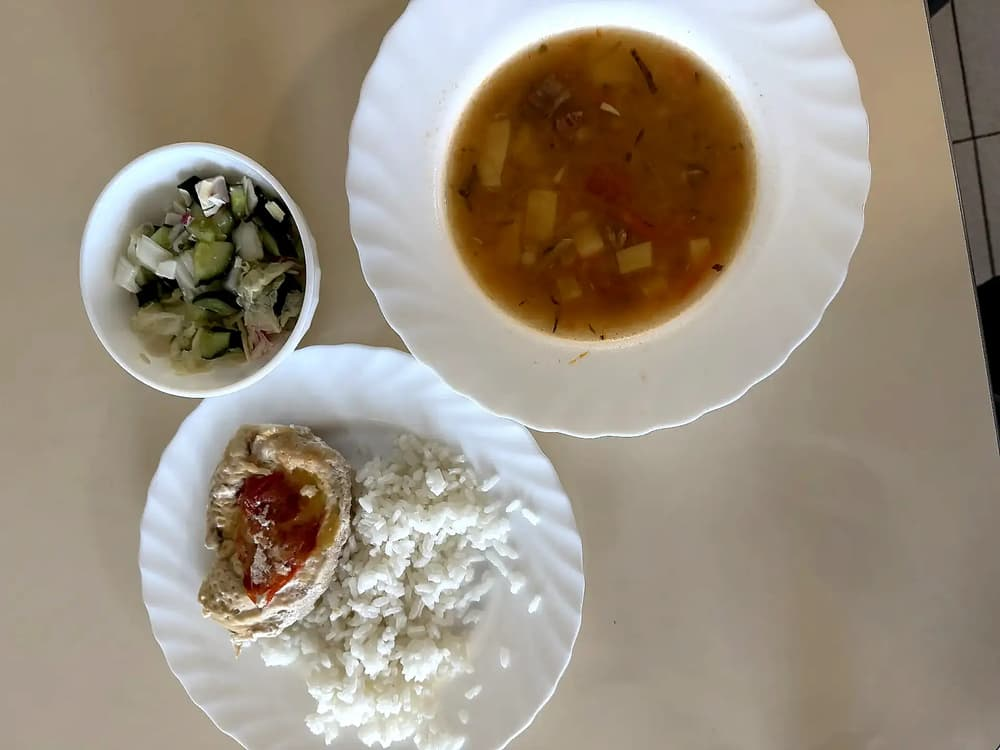
- 1. В кастрюлю влейте говяжий бульон и доведите до кипения.
- 2. Нарежьте отварной картофель кубиками, морковь — мелкими кусочками, репчатый лук мелко нашинкуйте.
- 3. Добавьте в кипящий бульон картофель, морковь, лук и варёный рис.
- 4. Квашеные огурцы нарежьте мелкими кубиками и добавьте в суп.
- 5. Варите на среднем огне 15–20 минут, чтобы вкусы объединились.
- 6. Попробуйте на вкус, при необходимости добавьте немного рассола от огурцов. Подавайте горячим.
Малиновое желе с клубникой
| Ингредиенты на 200 г готового блюда | Продукт | Кол-во | Вес |
|---|---|---|---|
| Клубника | 5.5 шт. | 96.6 г | |
| Малина | 14 шт. | 96.6 г | |
| Желатин (порошок) | 1 г | 1 г | |
| Вода | 12 г | 12.1 мл | |
| Сахар, песок | 3 чайные ложки | 24.2 г |

- 1. Малину измельчить в блендере, затем протереть через сито.
- 2. Желатин залить водой, довести до кипения, но не кипятить. Добавить в малиновое пюре желатин и сахар, перемешать.
- 3. Клубнику вымыть, обсушить и разложить по бокалам. Влить желе, поставить в холодильник до полного застывания.
мюсли батончик
| Ингредиенты на 96 г готового блюда | Продукт | Кол-во | Вес |
|---|---|---|---|
| Мюсли | 50 г | 50 г | |
| Яблоко | 0.5 шт. | 35 г | |
| Арахис, жареный | 15 г | 15 г |

- Мюсли батончик фруктово-орехово-зерновой
Каша гречневая рассыпчатая (ФИЦ Питания)
| Ингредиенты на 200 г готового блюда | Продукт | Кол-во | Вес |
|---|---|---|---|
| Гречиха, зерно | 2 столовые ложки | 49.1 г | |
| Масло сливочное 72,5% жирности, крестьянское | 7 г | 6.9 г | |
| Соль поваренная пищевая | 0.5 г | 0.4 г | |
| Вода | 4 столовые ложки | 74.1 мл |

- Гречневую крупу перебрать, тщательно промыть. Подготовленную для варки крупу всыпать в подсоленную кипящую воду, всплывшие пустотелые зерна удалить. Кашу варить до загустения, периодически помешивая. В конце варки добавить масло, плотно закрыть посуду крышкой и оставить на плите с умеренным нагревом для упревания.
Котлеты из индейки, запеченые
| Ингредиенты на 120 г готового блюда | Продукт | Кол-во | Вес |
|---|---|---|---|
| Фарш из индейки | 92.8 г | 92.8 г | |
| Хлеб пшеничный | 18.5 г | 18.6 г | |
| Вода | 24.5 г | 24.7 мл | |
| Соль, столовая йодированная | 0.5 г | 0.6 г |

- В фарш из мяса индейки добавляют замоченный в воде хлеб, пропускают через мясорубку, (соль по желанию), хорошо вымешивают. Формуют котлеты и выпекают в духовом шкафу при 180-200 град. до готовности.
- #с4лет
Салат винегрет
| Ингредиенты на 90 г готового блюда | Продукт | Кол-во | Вес |
|---|---|---|---|
| Свекла | 14.5 г | 14.5 г | |
| Морковь | 24 г | 24.1 г | |
| Картофель, сырой | 0.5 шт. | 40.2 г | |
| Лук, репчатый | 6 г | 6 г | |
| Огурцы, маринованные с укропом | 16 г | 16.1 г | |
| Капуста, белокочанная квашеная | 10 г | 10 г | |
| Горошек, зеленый консервированный | 7 г | 7.2 г | |
| Подсолнечное масло | 7 г | 6.8 мл | |
| Соль, столовая йодированная | 1 г | 0.8 г |

- 1. Свеклу, морковь и картофель отварить.
- 2. Очистить их и нарезать одинаковыми кубиками.
- 3. Лук очистить и вместе с огурцами мелко нарезать, квашеную капусту нашинковать. Смешать в миске картофель, морковь, огурцы, лук, капусту, свеклу и зеленый горошек.
- 4. Посолить по вкусу и заправить растительным маслом.
Омлет натуральный
| Ингредиенты на 100 г готового блюда | Продукт | Кол-во | Вес |
|---|---|---|---|
| Яйцо, куриное | 1.5 шт. | 73.6 г | |
| Коровье молоко, 3,2% жирности пастеризованное | 2 столовые ложки | 37.7 мл | |
| Масло сливочное | 6.5 г | 6.6 г |

- Яйцо взбить, добавить молоко. Взбитую массу влить на смазанную маслом форму и выпечь. Подать с маслом.
Чечевичный суп-пюре
| Ингредиенты на 350 г готового блюда | Продукт | Кол-во | Вес |
|---|---|---|---|
| Вода | 1 стакан 200 мл. | 196.6 мл | |
| Чечевица | 3.5 столовые ложки | 39.3 г | |
| Помидор (томат) | 1.5 шт. | 157.3 г | |
| Чеснок, сырой | 9.5 г | 9.4 г |

- Промыть чечевицу и добавить ее в подсоленную кипящую воду, варить 25 мин.
- Нарезать томаты, почистить и выдавить чеснок.
- Через 25 мин добавить томаты с чесноком и специями к чечевице. Варить еще 10 мин. Готовый суп пюрировать блендером.
Телятина тушеная
| Ингредиенты на 90 г готового блюда | Продукт | Кол-во | Вес |
|---|---|---|---|
| Телятина, 1 кат. | 147.5 г | 147.5 г |

- Телятину разделать на кусочки, тушить.
Булгур с овощами
| Ингредиенты на 250 г готового блюда | Продукт | Кол-во | Вес |
|---|---|---|---|
| Булгур, сухой | 5 столовых ложек | 93.6 г | |
| Перец сладкий, красный | 14 г | 14 г | |
| Морковь | 9.5 г | 9.4 г | |
| Подсолнечное масло, высокоолеиновое (>70%) | 9.5 г | 9.4 мл | |
| Соль, столовая йодированная | 1 г | 0.9 г |

- Овощи режим кубиком 1/1 см, обжариваем в сковороде на масле до полуготовности . Булгур заливаем водой доводим кипения варим на среднем огне 10 мин, и оставляем на медленном еще 5 . Выключаем и оставляем минут на 5 под крышкой.
Салат «Здоровье»
| Ингредиенты на 70 г готового блюда | Продукт | Кол-во | Вес |
|---|---|---|---|
| Салат (латук) | 30.2 г | 30.2 г | |
| Яблоко | 14.5 г | 14.5 г | |
| Морковь | 9 г | 9.1 г | |
| Сметана, 15% жирности | 14.5 г | 14.5 г | |
| Огурец. грунтовый | 13.5 г | 13.3 г | |
| Сок из лимона | 0.5 г | 0.6 мл | |
| Соль, столовая йодированная | 0.5 г | 0.6 г | |
| Сахар, песок | 0.5 г | 0.6 г |

- 1. Нарезать тонкими ломтиками яблоко, морковь и огурец.
- 2. Ломтики нарезать на тонкие брусочки.
- 3. Салат помыть, высушить, порвать или порезать.
- 4. Для заправки смешать сметану, лимонный сок, соль и сахар.
- 5. Смешать овощи, зелень и заправку.
Компот вишневый
| Ингредиенты на 300 г готового блюда | Продукт | Кол-во | Вес |
|---|---|---|---|
| Сахар, песок | 5.5 чайные ложки | 42.5 г | |
| Вода | 1 стакан 200 мл. | 198.1 мл | |
| Вишня | 14 шт. | 99.1 г |

- 1. В кастрюлю налить необходимое количество питьевой воды, добавить сахар.
- 2. Вишню тщательно вымыть и убрать все ветки и листики, если таковые имеются.
- 3. Подслащенную воду довести до кипения, положить в нее вишневые ягоды.
- 4. Снова довести до кипения, варить 2-3 минуты.
- 5. Перед подачей компоту нужно дать настояться.
Кисель из клюквы
| Ингредиенты на 300 г готового блюда | Продукт | Кол-во | Вес |
|---|---|---|---|
| Вода | 1 стакан 250 мл. | 252.1 мл | |
| Картофельный крахмал | 2 чайные ложки | 20.2 г | |
| Сахар, песок | 1 столовая ложка | 25.2 г | |
| Клюква | 0.5 стакана 200 мл. | 32.8 г |

- Ягоды варят 20-30 мин при слабом кипении, протирают и соединяют с отваром, в котором они варились, добавляют сахар, доводят до кипения, вводят подготовленный крахмал и вновь доводят до кипения.
Булочка с маком
| Ингредиенты на 100 г готового блюда | Продукт | Кол-во | Вес |
|---|---|---|---|
| Мак, семена | 1.5 г | 1.5 г | |
| Разрыхлитель пищевой | 1 г | 0.8 г | |
| Подсолнечное масло, высокоолеиновое (>70%) | 1.5 чайные ложки | 7.6 мл | |
| Сахар, песок | 7 г | 6.9 г | |
| Коровье молоко, 3,2% жирности пастеризованное | 24.5 г | 24.4 мл | |
| Соль, столовая йодированная | 1 г | 0.8 г | |
| Пшеничная мука цельнозерновая | 2 столовые ложки | 57.3 г | |
| Яйцо, куриное | 4 г | 3.8 г |
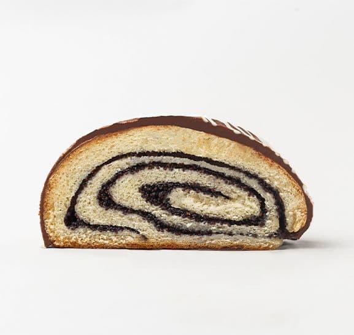
- Тесто замесить безопарным способом, сформировать круглой формой и оставить на расстойку. Затем смазать взбитым яйцом, посыпать маком и выпечь при температуре 200*С в течени 15 минут.
Картофельное пюре (ФИЦ Питания)
| Ингредиенты на 250 г готового блюда | Продукт | Кол-во | Вес |
|---|---|---|---|
| Картофель, сырой | 3.5 шт. | 356.5 г | |
| Коровье молоко, 3,2% жирности пастеризованное | 3 столовые ложки | 56.5 мл | |
| Соль, столовая йодированная | 11 г | 10.9 г | |
| Подсолнечное масло, высокоолеиновое (>70%) | 0.5 г | 0.7 мл |

- Очищенный картофель промыть, сварить в подсоленной воде, отвар слить. Горячий картофель пропустить через протирочную машину (или блендер), соединить с горячим кипяченым молоком, маслом, хорошо перемешать, прогреть. Блюдо подавать горячим.
Лосось атлантический запеченный
| Ингредиенты на 90 г готового блюда | Продукт | Кол-во | Вес |
|---|---|---|---|
| Лосось, атлантический (семга) | 0.5 шт. | 113.1 г | |
| Лимон | 2 г | 1.9 г | |
| Укроп, свежий | 0.5 чайные ложки | 0.9 г |

- Филе рыбы нарезают порционными кусками. Выкладывают на противень, сверху кладут ломтик лимона и веточку укропа. Специи по назначению врача.
- #с7лет
Салат из свеклы и нута
| Ингредиенты на 70 г готового блюда | Продукт | Кол-во | Вес |
|---|---|---|---|
| Свекла | 21 г | 21.1 г | |
| Оливковое масло | 5.5 г | 5.4 мл | |
| Чеснок, сырой | 0.5 г | 0.5 г | |
| Сок из лимона | 0.5 чайные ложки | 2.4 мл | |
| Нут (турецкий горох), вареный без соли | 32.9 г | 32.9 г | |
| Сыр фета, м.д.ж. 48% в сух. в-ве | 3 г | 3.1 г | |
| Руккола | 8 г | 7.8 г | |
| Шпинат, сырой | 8 г | 7.8 г | |
| Грецкий орех | 5.5 г | 5.5 г |

- Доведите кастрюлю с водой до кипения.
- Отрежьте стебли свеклы, оставив около дюйма. Поместите свеклу в кастрюлю с кипящей водой, накройте крышкой и варите около 45 минут или до готовности.
- Пока свекла варится, приготовьте винегрет, смешав в небольшой миске оливковое масло, свежевыжатый лимонный сок, чеснок и сыр фета.
- Используя щипцы, достаньте свеклу из кастрюли и поместите ее в миску с холодной водой. Когда он остынет на ощупь, отрежьте корни и стебли, затем руками снимите кожицу. Нарезаем свеклу некрупными кусочками.
- В большую миску добавьте нарезанную зелень, затем сверху выложите свеклу и нут.
- Добавьте винегрет и слегка перемешайте. Посыпьте салат измельченными грецкими орехами, подавайте и наслаждайтесь!
- #Греция
Диетическая творожная запеканка
| Ингредиенты на 100 г готового блюда | Продукт | Кол-во | Вес |
|---|---|---|---|
| Коровье молоко, 2,5% жирности пастеризованное | 16.5 г | 16.7 мл | |
| Творог, обезжиренный | 2.5 столовые ложки | 44.6 г | |
| Манная крупа | 7 г | 7.1 г | |
| Сахар, песок | 9 г | 8.9 г | |
| Яйцо, куриное | 11.5 г | 11.6 г |
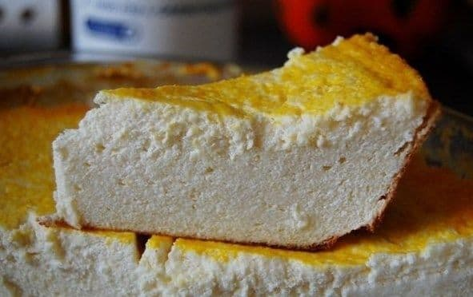
- 1. Смешать молоко с манной крупой и дать настояться
- 2. В это время смешать сахар и яйца
- 3. Все соединить и влить в творог
- 4. Выпекать 40-50 минут на небольшой температуре
Блинчики из цуккини или кабачка
| Ингредиенты на 50 г готового блюда | Продукт | Кол-во | Вес |
|---|---|---|---|
| Кабачок | 58.8 г | 58.8 г | |
| Яйцо, куриное | 12 г | 11.8 г | |
| Псиллиум (шелуха семян подорожника) | 3 г | 2.9 г | |
| Соль, столовая йодированная | 0.2 г | 0.2 г | |
| Мускатный орех, молотый | 0.5 г | 0.3 г | |
| Кунжут | 0.5 чайные ложки | 1.5 г | |
| Кокосовое масло (жидкое) | 1.5 г | 1.5 мл |
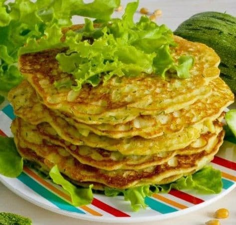
- 1. Потереть кабачок на тёрке.
- 2. Можно использовать разные специи по вкусу или зелень, зеленый лук.
- 3. Смешать все ингредиенты.
- 4. Обжарить на кокосовом масле с двух сторон.
Карамельно-апельсиновое варенье
| Ингредиенты на 50 г готового блюда | Продукт | Кол-во | Вес |
|---|---|---|---|
| Апельсин | 18 г | 18.1 г | |
| Сахар, песок | 4 чайные ложки | 31.7 г | |
| Имбирь, порошок | 0.2 г | 0.2 г |
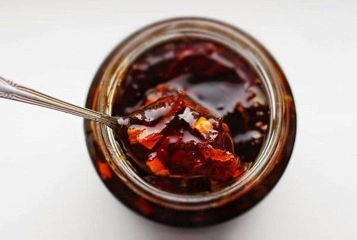
- 1. Апельсины, разделав на кусочки, избавить от белых прожилок и косточек.
- 2. Сахар и стакан воды смешать, поставить на плиту.
- 3. Вода с сахаром закипает - бросаем туда наши апельсины. Доводим до кипения и выключаем - пусть остывает.
- 4. Повторить процедуру кипячения соуса еще два раза, а на третий проследить за тем, чтобы все это богатство немного подзагустело и потемнело… если нужная консистенция становится уже на второй раз, не следуйте этим советам и смело заканчивайте все раньше.
- 5. Очистить цедру апельсина, но без белых прожилок, залить на 10 минут кипятком.
- 6. Всыпать нарезанный свежий имбирь, цедру в варенье и вылить в заранее приготовленную миску.
Суп куриный с лапшой
| Ингредиенты на 300 г готового блюда | Продукт | Кол-во | Вес |
|---|---|---|---|
| Картофель, сырой | 0.5 шт. | 32.6 г | |
| Масло сливочное 72,5% жирности, крестьянское | 3.5 г | 3.3 г | |
| Бульон, куриный | 1 стакан 250 мл. | 228.3 г | |
| Морковь | 13 г | 13 г | |
| Макароны, сухие | 1 столовая ложка | 26.1 г | |
| Лук, репчатый | 6.5 г | 6.5 г | |
| Соль, столовая йодированная | 1.5 г | 1.6 г |

- Овощи предварительно перебрать, очистить, промыть. Подготовленные морковь, репчатый лук мелко нашинковать, припустить в небольшом количестве бульона с добавлением сливочного масла затем добавить бульон мелко шинкованный картофель, соль и варить до готовности. Вермишель отварить в большом количестве воды, откинуть на сито, соединить с куриным бульоном, довести до кипения. Можно посыпать мелко нашинкованной свежей зеленью.
- #с4лет
Салат греческий
| Ингредиенты на 120 г готового блюда | Продукт | Кол-во | Вес |
|---|---|---|---|
| Огурец. грунтовый | 23 г | 22.9 г | |
| Помидор (томат) | 0.5 шт. | 27 г | |
| Лук, репчатый | 6.5 г | 6.7 г | |
| Перец сладкий, красный | 33.7 г | 33.7 г | |
| Перец душистый, молотый | 1.5 г | 1.4 г | |
| Оливки (чёрные), консервированные | 6.5 г | 6.7 г | |
| Оливковое масло | 0.5 столовые ложки | 6.7 мл | |
| Сок из лимона | 0.5 чайные ложки | 2.7 мл | |
| Сыр фета, м.д.ж. 48% в сух. в-ве | 0.5 куска | 27 г |

- Овощи моют, обсушивают, нарезают кубиками. Сыр «фета» нарезают кубиком. Лук — кольцами. На тарелку выкладывают лист салата, сверху нарезанные овощи, сыр «фета», кольца лука.
- Салат солят, перчат, поливают оливковым маслом и лимонным соком.
Говядина, отборная щуп обжаренная
| Ингредиенты на 100 г готового блюда | Продукт | Кол-во | Вес |
|---|---|---|---|
| Говядина, отборная вырезка сырая | 0.5 куска | 147.1 г | |
| Соль, столовая йодированная | 0.5 г | 0.6 г | |
| Перец черный, молотый или горошек | 6 шт. | 0.6 г | |
| Оливковое масло | 9 г | 8.8 мл |
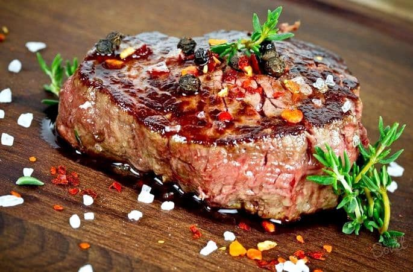
- Сначала мясо нужно подготовить – промыть, просушить и удалить все жесткие пленки.
- Когда мясо очищено, его нужно присолить и поперчить, обмазать специями, какие вам нравятся. Затем обмазать растительным маслом.
- Мясо жарим со всех сторон по несколько минут.
Холодец из филе индейки
| Ингредиенты на 50 г готового блюда | Продукт | Кол-во | Вес |
|---|---|---|---|
| Индейка | 58.1 г | 58.1 г | |
| Чеснок, сырой | 4.5 г | 4.7 г | |
| Горчица, столовая | 4.5 г | 4.3 г | |
| Желатин (порошок) | 0.5 чайные ложки | 2.7 г |

- Мясо индейки без жира отварить в 2 л. воды, переодически снимая пену (можно взять мясо на кости)
- Добавить лавровый лист, перей черный горошком (5-6шт) и соль по-вкусу. Варить 2 ч. на медленном огне
- Желатин залить стаканом воды и оставить набухать 40 минут, а потом растопить импульсами в микроволновке, периодически помешивая. Если желатин быстрорастворимый, то развести его горячим бульоном по инструкции.
- Мясо нарезать, добавить натертый чеснок (1 зубчик)
- В бульон добавить растворенный желатин, размешать и залить мясо бульоном, охладить и поставить в холодильник
- Подавать с горчицей, огурцами и зеленью
Апельсиновый сочный бисквит
| Ингредиенты на 100 г готового блюда | Продукт | Кол-во | Вес |
|---|---|---|---|
| Яйцо, куриное | 0.5 шт. | 25.5 г | |
| Сахар, песок | 1.5 столовые ложки | 36.8 г | |
| Масло сливочное | 12.5 г | 12.3 г | |
| Разрыхлитель пищевой | 0.5 г | 0.7 г | |
| Пшеничная мука, белая высшего сорта | 20.5 г | 20.4 г | |
| Апельсин | 10 г | 9.8 г |
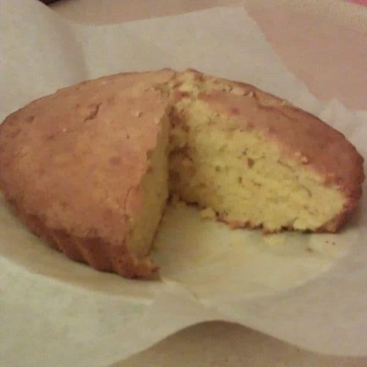
- 1. С апельсина снять цедру и натереть на терку. Затем выжать сок (50–70 мл).
- 2. Масло растереть с сахаром и ванилью. Добавить яйца и перемешать, влить сок и добавить цедру апельсина и снова перемешать.
- 3. Добавить муку и разрыхлитель и все хорошо перемешать.
- 4. Выложить в чашу, смазанную сливочным маслом. Выпекать 35 минут.
- 5. Вынуть чашу через 3–5 минут.
Салат "Летний"
| Ингредиенты на 150 г готового блюда | Продукт | Кол-во | Вес |
|---|---|---|---|
| Помидор (томат) | 0.5 шт. | 70.1 г | |
| Яблоко | 0.5 шт. | 35.1 г | |
| Перец сладкий, красный | 0.5 шт. | 52.6 г | |
| Оливковое масло | 16 г | 15.8 мл | |
| Соль, столовая йодированная | 0.5 г | 0.4 г | |
| Сахар, коричневый | 0.5 г | 0.4 г | |
| Сок из лимона | 3.5 г | 3.5 мл |

- Помидоры положите в дуршлаг, облейте кипятком, а затем сразу же - холодной водой. Снимите кожицу. Нарежьте очищенные помидоры тонкими ломтиками.
- Очищенное яблоко разрежьте пополам и удалите сердцевину. Яблоко тоже нарежьте дольками. Перец нарежьте мелкой соломкой. Все перемешайте.
- Посолите, всыпьте сахар, добавьте лимонный сок и полейте растительным маслом.
Рис отварной рассыпчатый (ФИЦ Питания)
| Ингредиенты на 200 г готового блюда | Продукт | Кол-во | Вес |
|---|---|---|---|
| Рис белый, длиннозерный сухой | 2 столовые ложки | 47.6 г | |
| Вода | 0.5 стакана 200 мл. | 99.6 мл | |
| Соль, столовая йодированная | 1 г | 0.9 г | |
| Масло сливочное 72,5% жирности, крестьянское | 4.5 г | 4.4 г |

- Рис перебрать, промыть в теплой и горячей воде, засыпать в кипящую, подсоленную воду, удалить всплывшие пустотелые зерна и варить до готовности. Откинуть рис на сито, добавить сливочное масло, тщательно перемешать, прогреть. Подавать в теплом виде на гарнир.
Запеченная скумбрия
| Ингредиенты на 150 г готового блюда | Продукт | Кол-во | Вес |
|---|---|---|---|
| Скумбрия, атлантическая | 0.5 шт. | 165.3 г | |
| Лимон | 0.5 шт. | 49.6 г | |
| Перец душистый, молотый | 0.5 г | 0.4 г | |
| Соль, столовая йодированная | 0.5 г | 0.4 г |

- 1. Скумбрию почистить и промыть. Натереть снаружи и изнутри солью и перцем.
- 2. Положить рыбу на пергамент, свернуть его в виде лодочки, и поместить в форму для запекания.
- 3. Внутрь рыбы положить нарезанный полукольцами лимон.
- 4. Запекать при температуре 200 градусов 30 минут.
Сырный крекер
| Ингредиенты на 30 г готового блюда | Продукт | Кол-во | Вес |
|---|---|---|---|
| Сыр сливочный 16,8% жирности, м.д.ж. 50% в сух. в-ве | 11 г | 10.9 г | |
| Яйцо, куриное | 7.5 г | 7.6 г | |
| Рисовая мука, белая | 11 г | 10.9 г | |
| Масло сливочное | 5.5 г | 5.5 г |
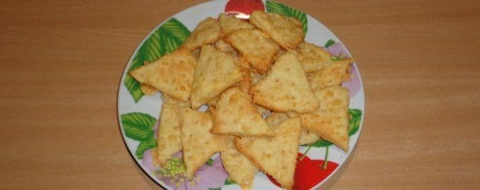
- Шаг 1: Подготовьте необходимые ингредиенты. Сливочное масло немного подержите в морозилке перед готовкой.
- Шаг 2: Натрите подмороженное сливочное масло на крупной терке и смешайте его с рисовой мукой.
- Шаг 3: Далее натрите сыр на крупной терке.
- Шаг 4: Добавьте сыр и яйцо в муку и замесите тесто.
- Шаг 5: Раскатайте тонкое тесто и нарежьте его в виде сырных ломтиков. Выпекайте крекер 10 минут при температуре 180 градусов.
- Шаг 6: Готовое печенье можно подавать как в горячем, так и в холодном виде.
Каша гречневая молочная без масла
| Ингредиенты на 300 г готового блюда | Продукт | Кол-во | Вес |
|---|---|---|---|
| Вода | 3.5 столовые ложки | 64.1 мл | |
| Гречиха, зерно | 1.5 столовые ложки | 42.7 г | |
| Коровье молоко, 2,5% жирности пастеризованное | 0.5 стакана 250 мл. | 138.8 мл | |
| Сахар, песок | 5.5 г | 5.3 г |

- В кипящую воду всыпают перебранную и промытую крупу, перемешивают и варят до полуготовности. Затем вливают горячее молоко и варят до готовности при слабом кипении под закрытой крышкой.
- #с7лет
Постные блины из гречневой муки
| Ингредиенты на 100 г готового блюда | Продукт | Кол-во | Вес |
|---|---|---|---|
| Гречневая мука, цельнозерновая | 1.5 столовые ложки | 40.5 г | |
| Коровье молоко, 2,5% жирности пастеризованное | 3.5 столовые ложки | 63.3 мл | |
| Дрожжи, прессованные | 1 г | 1.1 г | |
| Соль, столовая йодированная | 0.5 г | 0.3 г |
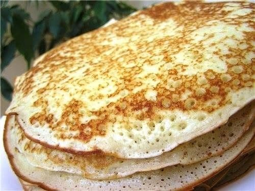
- 1. В эмалированную кастрюлю влить 1/2 стакана теплого молока и развести в нем дрожжи. Добавить еще 1 1/2 стакана молока.
- 2. Постепенно при непрерывном помешивании всыпать в кастрюлю с молоком 2 стакана муки.
- 3. Тесто хорошо размешать так, чтобы не было комков. Накрыть кастрюлю полотенцем, поставить в теплое место (к батарее центрального отопления).
- 4. Когда тесто подойдет, т.е. увеличится в объеме в 2-3 раза, добавить к нему остальную муку, молоко, соль, хорошо размешать и вновь поставить в теплое место.
- 5. После того как тесто снова подойдет, можно начинать выпекать блины. При этом зачерпывать тесто из кастрюли нужно очень осторожно, чтобы не дать ему опасть. От этого зависят пухлость, рассыпчатость блинов.
- 6. Сковороду смазать одной чайной ложкой растительного масла.
Кускус (кус-кус), приготовленный
| Ингредиенты на 200 г готового блюда | Продукт | Кол-во | Вес |
|---|---|---|---|
| Кускус (кус-кус), сухой | 6.5 чайные ложки | 45.8 г | |
| Вода | 5 столовых ложек | 91.5 мл | |
| Соль, столовая йодированная | 0.5 г | 0.5 г |

- Варить крупу не обязательно, можно предварительно запарить в кипячёной воде на 15 минут. Кус-кус выходит рассыпчатым, хорошо добавлять в салаты. Для каш его нужно выдержать немного дольше, хватит и 20 минут при соблюдении пропорций.
- Важно правильно взять количество ингредиентов для получения рассыпчатой консистенции. Необходимо подготовить воду и крупу в пропорции 1,5:1. Воду желательно регулировать, чтобы блюдо получилось нужной консистенции. Получить влажный кус-кус можно, если взять воды с крупой в соотношении 2:1. Когда жидкость полностью впитается, её считают готовой к употреблению.
Лосось атлантический запеченный
| Ингредиенты на 100 г готового блюда | Продукт | Кол-во | Вес |
|---|---|---|---|
| Лосось, атлантический (семга) | 0.5 шт. | 125.7 г | |
| Лимон | 2 г | 2.1 г | |
| Укроп, свежий | 0.5 чайные ложки | 1.1 г |
- Филе рыбы нарезают порционными кусками. Выкладывают на противень, сверху кладут ломтик лимона и веточку укропа. Специи по назначению врача.
- #с7лет
Щи из свежей капусты на мясном бульоне со сметаной (ФИЦ Питания)
| Ингредиенты на 300 г готового блюда | Продукт | Кол-во | Вес |
|---|---|---|---|
| Капуста, белокочанная | 74.9 г | 74.9 г | |
| Картофель, сырой | 0.5 шт. | 49.9 г | |
| Морковь | 12.5 г | 12.5 г | |
| Лук, репчатый | 6 г | 6 г | |
| Подсолнечное масло, высокоолеиновое (>70%) | 0.5 чайные ложки | 2.5 мл | |
| Сметана, 20% жирности | 5 г | 5 г | |
| Петрушка, свежая | 3.5 г | 3.5 г | |
| Петрушка (корень) | 3.5 г | 3.5 г | |
| Помидор (томат) | 12 г | 12 г | |
| Бульон, говяжий | 1 стакан 250 мл. | 224.6 г | |
| Соль, столовая йодированная | 0.5 г | 0.3 г |

- Подготовленные овощи: морковь, репчатый лук, корень петрушки мелко нарезать, припустить в небольшом количестве воды с добавлением масла, в конце добавить томат или свежие помидоры. Белокочанную капусту зачистить, промыть, нарезать тонкими шашками, залить горячим мясным бульоном, довести до кипения, добавить мелко нарезанный картофель, припущенные коренья, соль и варить до готовности. При подаче суп заправить сметаной и посыпать мелко нарезанной зеленью петрушки.
Салат из моркови, яблок, чернослива со сметаной (ФИЦ Питания)
| Ингредиенты на 70 г готового блюда | Продукт | Кол-во | Вес |
|---|---|---|---|
| Морковь | 0.5 шт. | 47 г | |
| Яблоко | 11.5 г | 11.3 г | |
| Чернослив (слива сушеная) | 13 г | 13.2 г | |
| Сахар, песок | 2.5 г | 2.4 г | |
| Сметана, 20% жирности | 9.5 г | 9.4 г |
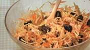
- Морковь очистить, промыть, нарезать соломкой. Добавить сахар, размоченный нарезанный чернослив и яблоки, нарезанные ломтиками, без семенных гнезд, овощи охладить
Булочка с изюмом печеная (ФИЦ Питания)
| Ингредиенты на 100 г готового блюда | Продукт | Кол-во | Вес |
|---|---|---|---|
| Пшеничная мука, белая высшего сорта | 1.5 столовые ложки | 47.6 г | |
| Коровье молоко, 3,2% жирности пастеризованное | 24 г | 23.8 мл | |
| Подсолнечное масло, высокоолеиновое (>70%) | 6.5 г | 6.7 мл | |
| Сахар, песок | 5 г | 4.8 г | |
| Яйцо, куриное | 9.5 г | 9.5 г | |
| Изюм, без косточек | 9.5 г | 9.5 г | |
| Дрожжи, прессованные | 2 г | 1.9 г | |
| Соль, столовая йодированная | 0.5 г | 0.3 г |

- В теплом молоке (30-35С) развести дрожжи, добавить соль, сахар, муку, масло и замесить тесто, перед окончанием замеса добавить промытый изюм (без зернышек). Тесто замесить так, чтобы оно хорошо отставало от края посуды, затем поставить в теплое место и дать ему подняться, после чего разделать булочки, выложить их на противень, смазанный маслом (2г рецептурного количества) и оставить для расстойки. Перед выпечкой поверхность булочки смазать яйцом и выпекать в жарочном шкафу при температуре 200-240С 8-10 минут.
Вишневый кисель с корицей
| Ингредиенты на 300 г готового блюда | Продукт | Кол-во | Вес |
|---|---|---|---|
| Вишня | 10 шт. | 71.1 г | |
| Сахар, песок | 19.5 г | 19.4 г | |
| Вода | 1 стакан 250 мл. | 232.6 мл | |
| Картофельный крахмал | 13 г | 13 г | |
| Корица, молотая | 2.5 г | 2.3 г |

- 1. Подготовленную вишню без косточек залить кипящей водой, добавить специи — кожуру лимона или корицу, довести до кипения, варить на малом огне 10–15 минут.
- 2. Протереть ягоды сквозь сито или дуршлаг. В полученный отвар с мякотью вишни добавить сахар, довести до кипения и влить крахмал, разведенный в небольшом количестве холодной кипяченой воды, размешать, снова довести до кипения и тут же снять с огня. Кисель можно подать горячим или холодным.
Салат «Хориятики»
| Ингредиенты на 90 г готового блюда | Продукт | Кол-во | Вес |
|---|---|---|---|
| Орегано, сушеный | 0.5 чайные ложки | 0.8 г | |
| Перец сладкий, желтый | 19 г | 19.1 г | |
| Лук, репчатый | 10 г | 10.2 г | |
| Помидор (томат) | 0.5 шт. | 25.4 г | |
| Огурец. грунтовый | 19 г | 19.1 г | |
| Сыр фета, м.д.ж. 48% в сух. в-ве | 11.5 г | 11.4 г | |
| Оливки (чёрные), консервированные | 12.5 г | 12.7 г | |
| Оливковое масло | 1.5 г | 1.3 мл | |
| Уксус, винный 3% | 1.5 г | 1.3 г |

- 1. Репчатый лук очистите, вымойте и нарежьте кубиками.
- 2. Помидоры и огурец вымойте и нарежьте дольками.
- 3. Сладкий перец вымойте, разрежьте пополам и удалите семена. Нарежьте перец небольшими полосками.
- 4. Сыр фета откиньте на дуршлаг и дайте рассолу стечь. Нарежьте сыр кубиками.
- 5. Выложите овощи, маслины, сыр и зелень в салатник. Осторожно перемешайте так, чтобы не помять составляющие салата.
- 6. Винный уксус и оливковое масло взбить вилкой. Заправьте салат соусом.
- 7. Подавайте салат охлажденным, украсив орегано.
Паста болоньез
| Ингредиенты на 250 г готового блюда | Продукт | Кол-во | Вес |
|---|---|---|---|
| Макароны, спагетти из цельнозерновой муки, сухие | 58.8 г | 58.8 г | |
| Говядина, фарш 5% жира сырая | 117.6 г | 117.6 г | |
| Лук, репчатый | 0.5 шт. | 29.4 г | |
| Чеснок, сырой | 4 г | 3.9 г | |
| Помидор (томат) | 1 шт. | 78.4 г | |
| Паста, томатная | 3.5 чайные ложки | 35.3 г |
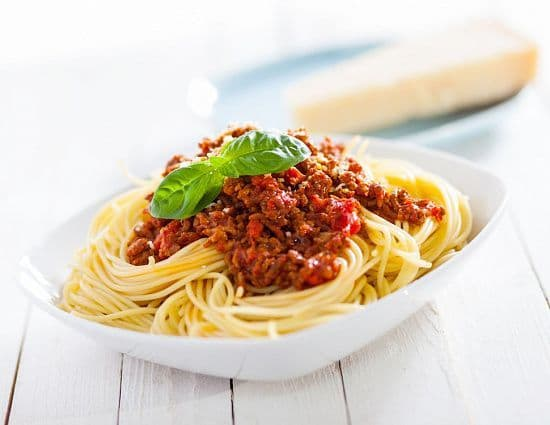
- На растительном масле обжариваем лук и чеснок до золотистого цвета. Добавляем помидоры кубиком. Тушим 3-4 минуты. Добавляем фарш. Хорошо перемешиваем, разбивая все комочки фарша. Тушим 5-6 минут на среднем огне. Добавляем томатную пасту, воду, соль, перец и базилик. Перемешиваем, доводим до кипения, тушим ещё 2-3 минуты и все готово
мюсли батончик
| Ингредиенты на 50 г готового блюда | Продукт | Кол-во | Вес |
|---|---|---|---|
| Мюсли | 26 г | 26 г | |
| Яблоко | 18 г | 18.2 г | |
| Арахис, жареный | 8 г | 7.8 г |
- Мюсли батончик фруктово-орехово-зерновой
Оладьи (ФИЦ Питания)
| Ингредиенты на 50 г готового блюда | Продукт | Кол-во | Вес |
|---|---|---|---|
| Пшеничная мука, белая высшего сорта | 18.5 г | 18.7 г | |
| Яйцо, куриное | 1.5 г | 1.5 г | |
| Коровье молоко, 3,2% жирности пастеризованное | 4 чайные ложки | 20.2 мл | |
| Сахар, песок | 1 г | 1.1 г | |
| Подсолнечное масло, высокоолеиновое (>70%) | 3.5 г | 3.7 мл | |
| Соль, столовая йодированная | 0.5 г | 0.4 г | |
| Дрожжи, прессованные | 1 г | 1.1 г | |
| Сметана, 20% жирности | 7.5 г | 7.5 г |
- В небольшом количестве теплого молока растворить соль, сахар, добавить предварительно разведенные дрожжи, соединить с остальным молоком, подогретым до 35-40°С, добавить муку, яйца и тщательно перемешать во избежание комочков, затем ввести масло растительное и снова перемешать до образования однородной массы. Замешанное тесто оставить в теплом месте (25-35°С) на 3-4 часа. В процессе брожения тесто перемешивают (обминают). Оладьи выпекать на разогретых чугунных сковородах или толстостенных противнях. Толщина готовых оладий должна быть не менее 5-6 мм. Оладьи можно отпускать со сметаной.
Суп «Ассорти»
| Ингредиенты на 300 г готового блюда | Продукт | Кол-во | Вес |
|---|---|---|---|
| Соль, столовая йодированная | 2.5 г | 2.7 г | |
| Вода | 1 стакан 200 мл. | 198.7 мл | |
| Лук порей | 13.5 г | 13.3 г | |
| Морковь | 0.5 шт. | 49.7 г | |
| Лук, репчатый | 0.5 шт. | 33.1 г | |
| Картофель, сырой | 0.5 шт. | 49.7 г | |
| Говядина, 1 кат. | 33.1 г | 33.1 г | |
| Свинина, мясная | 26.5 г | 26.5 г | |
| Лавровый лист | 0 г | 0 г | |
| Тмин, семена | 2 г | 2 г | |
| Перец черный, молотый или горошек | 3.5 г | 3.3 г | |
| Гвоздика, молотая | 3.5 шт. | 0.3 г |

- 1. В кастрюлю, подходящую для микроволновой печи, положить нарезанное небольшими кусочками мясо, кубиками — морковь и картофель, лавровый лист и гвоздику, налить половину воды, посолить, поперчить, перемешать. Накрыть крышкой, варить 10 минут на средней мощности в микроволновой печи.
- 2. Добавить мелко нарезанный репчатый лук и стебель лука-порея и все хорошо перемешать. Посыпать тмином. Влить вторую половину воды, накрыть крышкой и варить 10 минут на средней мощности СВЧ-печи (1–2 раза помешав).
Рис басмати
| Ингредиенты на 250 г готового блюда | Продукт | Кол-во | Вес |
|---|---|---|---|
| Рис белый, длиннозерный сухой | 2 столовые ложки | 53.5 г | |
| Вода | 0.5 стакана 250 мл. | 145.4 мл | |
| Соль, столовая йодированная | 1 г | 1.2 г |

- 1. Рис промыть от 3-х до 7-ми раз. Качественно промытая крупа — залог положительного результата.
- 2. В кастрюле с толстым дном довести до кипения подсоленную воду, всыпать рис.
- 3. Дальше варить 4 минуты на максимальном огне, 4 минуты на среднем и 4 минуты на слабом.
- 4. Снять кастрюлю с плиты и с закрытой крышкой отставить на 12 минут.
- 5. Снять крышку на 5 минут. Тщательно перемешать.
Морковный салат
| Ингредиенты на 70 г готового блюда | Продукт | Кол-во | Вес |
|---|---|---|---|
| Сок из лимона | 3 г | 3.1 мл | |
| Апельсин | 23 г | 22.9 г | |
| Виноград | 11.5 г | 11.4 г | |
| Морковь | 0.5 шт. | 38.1 г | |
| Кунжутное масло | 4.5 г | 4.6 мл |

- Приготовление:
- Почистить морковь и натереть ее на терке. Очистить апельсин и разделить на дольки. Выжать сок из второго апельсина. Смешать апельсиновый и лимонный соки, масло. Полученной смесью полить тертую морковь. Сверху положить дольки апельсина и виноград.
Компот сливовый
| Ингредиенты на 300 г готового блюда | Продукт | Кол-во | Вес |
|---|---|---|---|
| Вода | 1 стакан 250 мл. | 242.3 мл | |
| Сахар, песок | 4.5 чайные ложки | 34.6 г | |
| Слива | 2 шт. | 57.7 г |

- Из сливы удаляют косточки. Сироп приготавливают следующим образом: в горячей воде растворяют сахар, доводят до кипения, проваривают 6—8 мин. В горячий сахарный сироп закладывают сливу и только доводят до кипения. Затем процеживают.
Треска, рыба, тушеная
| Ингредиенты на 100 г готового блюда | Продукт | Кол-во | Вес |
|---|---|---|---|
| Вода | 4.5 чайные ложки | 22.5 мл | |
| Помидор (томат), грунтовый | 3 г | 3.2 г | |
| Лук, репчатый | 12 г | 11.8 г | |
| Треска | 65.2 г | 65.2 г | |
| Подсолнечное масло, высокоолеиновое (>70%) | 5.5 г | 5.4 мл | |
| Морковь | 0.5 шт. | 28.9 г |

- Филе нарезают на порционные куски, укладывают в посуду в два слоя, чередуя со слоями нарезанных соломкой моркови и лука репчатого, заливают водой, добавляют томатное пюре, сметану, масло растительное, посуду закрывают крышкой и тушат 30 мин до готовности.
- #с4лет
Облепиховый чай
| Ингредиенты на 300 г готового блюда | Продукт | Кол-во | Вес |
|---|---|---|---|
| Облепиха | 0.5 стакана 200 мл. | 33.5 г | |
| Имбирь, корень сырой | 3 г | 2.8 г | |
| Апельсиновый сок | 16.5 г | 16.7 мл | |
| Апельсин | 22.5 г | 22.3 г | |
| Вода | 1 стакан 200 мл. | 223.1 мл | |
| Мята перечная, свежая | 1.5 г | 1.7 г | |
| Корица, молотая | 0.5 г | 0.6 г |
- Облепиху, слайсы имбиря, листья мяты залить половиной кипятка. Облепиху размять. Из 1/2 апельсина выдавить сок , вторую половину нарезать дольками. Дольки апельсина положить к облепихе, долить горячей водой, дать настояться 2-3 минуты. Залить апельсиновый сок. Корица, мята , имбирь добавляются в напиток в разном сочетании по вкусу.
Запеченные овощи с розмарином
| Ингредиенты на 90 г готового блюда | Продукт | Кол-во | Вес |
|---|---|---|---|
| Кабачок | 0.5 шт. | 62.9 г | |
| Баклажан | 0.5 шт. | 52.8 г | |
| Перец сладкий, желтый | 0.5 шт. | 37.7 г | |
| Оливковое масло | 0.5 г | 0.5 мл | |
| Розмарин, свежий | 0.5 г | 0.5 г | |
| Соль, столовая йодированная | 0.5 г | 0.5 г |
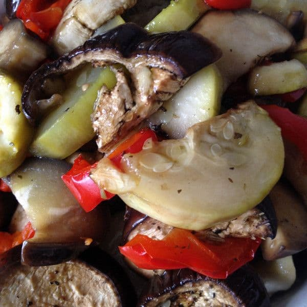
- 1. Баклажаны и кабачки разрезать пополам и каждую половину нарезать довольно крупными кусками.
- 2. Сладкий перец нарезать полукольцами. Перец лучше взять красного цвета — так блюдо получится красивым.
- 3. Выложить нарезанные овощи в форму для запекания.
- 4. Хорошенько сбрызнуть оливковым маслом, посолить и посыпать розмарином.
- 5. Разогреть духовку на 180 градусов и запекать примерно 30 минут.
Картофель отварной
| Ингредиенты на 200 г готового блюда | Продукт | Кол-во | Вес |
|---|---|---|---|
| Картофель, сырой | 3.5 шт. | 347.4 г | |
| Масло сливочное 82,5% жирности, традиционное (в т.ч. Вологодское) | 17.5 г | 17.5 г |
- Картофель предварительно промыть, тщательно перебрать и очистить. Очищенный, промытый картофель залить горячей кипяченой водой (уровень воды должен быть на 1-1.5см выше уровня картофеля), добавить соль(при назначении врача) и варить при небольшом кипении 15-20 минут, закрыв посуду крышкой. Затем отвар слить, а посуду с готовым картофелем поставить на небольшой огонь на 1-2 минуты и, встряхивая, обсушить картофель.
Курица в соусе терияки
| Ингредиенты на 244 г готового блюда | Продукт | Кол-во | Вес |
|---|---|---|---|
| Имбирь, корень сырой | 1 чайная ложка | 8 г | |
| Куриная грудка (филе, курица) | 0.5 шт. | 200 г | |
| Соевый соус | 6 чайных ложек | 31.2 г | |
| Уксус, яблочный | 1 столовая ложка | 17 г | |
| Перец черный, молотый или горошек | 10 шт. | 1 г | |
| Сахар, коричневый | 1.5 столовые ложки | 37.5 г | |
| Картофельный крахмал | 0.5 чайные ложки | 5 г | |
| Чеснок, сырой | 1 шт. | 6 г |
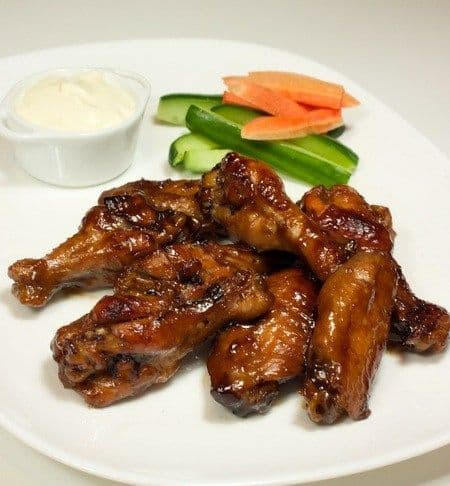
- 1. В маленькой кастрюльке смешать сахар, соевый соус, уксус, перец, крахмал разведенный в 50 мл холодной воды, натертый на терке имбирь и чеснок.
- 2. Помешавшая доведем до кипения, соус не должен загустеть.
- 3. Противень смажем маслом.
- 4. Выложим куриное филе, предварительно нарезанное на куски средней величины. (Вместо куриного филе можно положить крылья или бедра)
- 5. Хорошо польем соусом и отправляем все это в предварительно нагретую духовку до 220 градусов на 30 минут.
- 6. Через каждые 5–7 минут размешиваем, чтобы мясо превосходно пропивалось соусом.
Рисовая молочная каша
| Ингредиенты на 350 г готового блюда | Продукт | Кол-во | Вес |
|---|---|---|---|
| Сахар, коричневый | 2.5 г | 2.4 г | |
| Рис белый, длиннозерный сухой | 2 столовые ложки | 54.7 г | |
| Коровье молоко, 1,5% жирности пастеризованное | 1 стакан 250 мл. | 237.8 мл | |
| Соль, столовая йодированная | 0.5 г | 0.5 г | |
| Масло сливочное | 0.5 чайные ложки | 4.8 г |

- 1. 1Рис промыть и засыпать в чашу мультиварки.
- 2. Добавить молоко, соль, сахар, масло, перемешать.
- 3. Включить режим «Молочная каша» на 1 час 15 минут.
- 4. После сигнала об окончании работы программы открыть мультиварку и перемешать кашу.
- 5. Закрыть крышку и оставить в режиме «Подогрев» ещё на 15 минут.
- 6. Разложить по тарелкам.
Овощной суп минестроне на мясном бульоне
| Ингредиенты на 350 г готового блюда | Продукт | Кол-во | Вес |
|---|---|---|---|
| Фасоль, стручковая зеленая | 16 г | 16 г | |
| Лук порей | 16 г | 16 г | |
| Брокколи | 24 г | 24 г | |
| Морковь | 12 г | 12 г | |
| Сельдерей | 16 г | 16 г | |
| Бульон, говяжий | 0.5 стакана 250 мл. | 160.1 г | |
| Масло гхи | 1 г | 0.8 мл | |
| Соль, столовая йодированная | 0.2 г | 0.2 г | |
| Вода | 0.5 стакана 250 мл. | 160.1 мл |
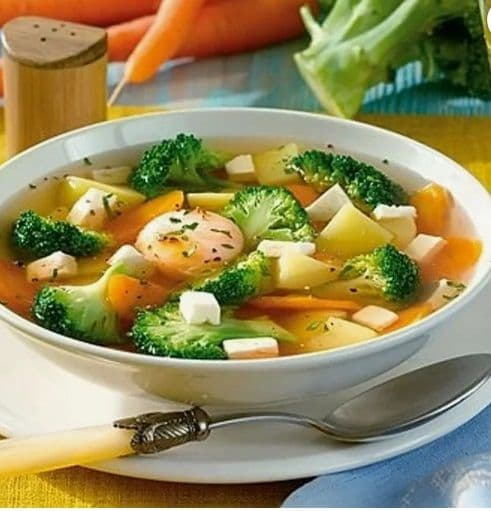
- 1. Овощи нарезать средними кубиками.
- 2. В большой кастрюле растопить масло ГХИ, добавить морковь, брокколи, лук порей, фасоль, сельдерей. Томить 3 минуты.
- 3. Добавить бульон (костный или говяжий), воду. Посолить, поперчить, добавить специи по вкусу (как вариант: прованские травы).
- 4. Довести до кипения и варить 150 минут. Подавать с зеленью.
Салат из красной капусты и огурца с кунжутной…
| Ингредиенты на 90 г готового блюда | Продукт | Кол-во | Вес |
|---|---|---|---|
| Льняное масло | 1 г | 1 мл | |
| Капуста, краснокочанная | 50 г | 50 г | |
| Огурец. грунтовый | 22 г | 22 г | |
| Морковь | 15 г | 15 г | |
| Кунжут | 0.5 столовые ложки | 4 г | |
| Соевый соус | 3 г | 2.8 г | |
| Сахар, песок | 1 г | 0.8 г | |
| Уксус, яблочный | 0.5 столовые ложки | 8.5 г | |
| Кунжутное масло | 0.5 г | 0.5 мл |

- 1. Огурец нарезаем на тонкие кружочки.
- 2. Капусту тонко шинкуем.
- 3. Морковь трем на крупной терке.
- 4. Готовим заправку. В чашу блендера кладем кунжут и сахар, наливаем уксус, льняное и кунжутное масло. Перемалываем до однородного состояния.
- 5. Колечки огурца укладываем на тарелку, сверху кладем капусту и морковь. Поливаем заправкой, посыпаем черным и белым кунжутом. Подаем.
Котлеты классические
| Ингредиенты на 150 г готового блюда | Продукт | Кол-во | Вес |
|---|---|---|---|
| Говядина, 1 кат. | 0.5 куска | 89.1 г | |
| Свинина, вырезка | 71.3 г | 71.3 г | |
| Яйцо, куриное | 9.5 г | 9.3 г | |
| Батон нарезной (хлеб) | 18 г | 17.8 г | |
| Коровье молоко, 1,5% жирности пастеризованное | 0.5 столовые ложки | 8.9 мл | |
| Лук, репчатый | 18 г | 17.8 г | |
| Мускатный орех, молотый | 0.5 шт. | 1.8 г | |
| Перец душистый, молотый | 2 г | 1.8 г | |
| Соль, столовая йодированная | 2 г | 1.8 г | |
| Масло сливочное, топленое 99% жирности | 5.5 г | 5.3 г |

- 1. Замачиваем хлеб в молоке
- 2. Мясо прокручиваем в фарш.
- 3. Прокручиваем в мясо лук и замоченный в молоке хлеб, добавляем яйцо, специи
- 4. Все тщательно перемешиваем и даём фаршу постоять 20-30 мин.
- 5. Большой ложкой берём фарш с горкой и смоченными водой руками формируем шарики. Придаём плоскую форму.
- 6. Растапливаем топленое масло на сковородке и выкладываем котлеты на сковородку
- 7. Жарим на среднем огне по 5 минут с каждой стороны
Домашние круассаны
| Ингредиенты на 50 г готового блюда | Продукт | Кол-во | Вес |
|---|---|---|---|
| Коровье молоко, 2,5% жирности пастеризованное | 8.5 г | 8.5 мл | |
| Дрожжи, прессованные | 0.5 г | 0.5 г | |
| Яйцо, куриное | 4.5 г | 4.4 г | |
| Пшеничная мука, белая высшего сорта | 21.5 г | 21.3 г | |
| Сахар, коричневый | 1.5 г | 1.3 г | |
| Соль, столовая йодированная | 0.2 г | 0.2 г | |
| Масло сливочное | 15.5 г | 15.4 г |
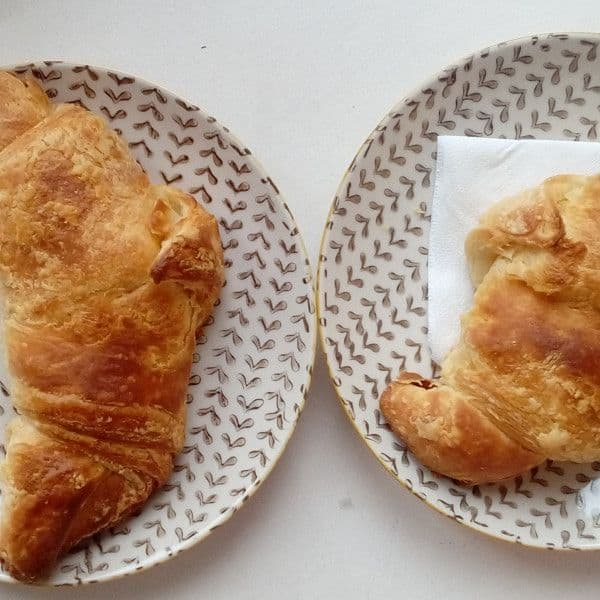
- 1. В муку нужно раскрошить дрожжи (или всыпать, если сухие). Тут же ввести теплое молоко, сахар, соль, яйца, 60 грамм сливочного масла и лимонную цедру. Яйца и сливочное масло должны быть комнатной температуры. Вымесить хорошо, с силой. Тесто не должно прилипать к рукам и рабочей поверхности, иными словами, должно получится мягким и упругим. И оно таким станет, будьте уверены. Получится у вас шар, его нужно оставить на полчаса в теплом месте (миску накройте полотенцем или салфеткой).
- 2. Пока тесто подходит, достаньте из холодильника 300 грамм сливочного масла и порежьте. Расстелите на рабочей поверхности пленку и выкладывайте на нее пластинки масла. Долго не раздумывайте, масло должно оставаться холодным! Теперь задача такая: раскатать масло скалкой в пласт толщиной в 1 см (примерно). Как только с этим покончено, уберите масляный пласт в морозилку минут на 20 (если помните, то он завернут в пленку). Проверьте тесто, оно должно уже подойти. Значит, скалку далеко откладывать не следует. Раскатайте тесто в пласт, который должен быть в два раза больше масляного.
- 3. В центр раскатанного прямоугольника положите масло (от пленки его освобождаем, естественно) и сложите свободные края теста к центру (как конверт). Теперь их нужно хорошо защипать (получится действительно нечто похожее на конверт с маслом внутри). Снова скалку в руки. Раскатываем в 1 см толщиной. Получится длинная и не слишком широкая полоска (катайте от себя и к себе, но не в стороны). Обойдемся без резких движений, чтобы масло так и оставалось внутри и наружу не выбралось. Зрительно разделите раскатанное тесто на три части. Две крайние сложите к центру. Заверните в пленку и уберите в морозилку на полчаса.
- 4. Вот и заслуженный отдых, однако, не продолжительный. Полчаса прошло и тесто нужно снова раскатать в длинную полоску (раскатывать от себя и к себе). Снова сложить две крайние части к центру. И еще раз сложить (как будто закрываете книгу). Снова завернуть в пленку и еще на полчаса в морозилку. На этом моменте можно начинать радоваться и страшно гордиться собой, потому как вы вышли на финишную прямую. Раскатайте тесто, пусть оно будет не очень толстым (7–8 мм достаточно). Порежьте на удлиненные треугольники.
- 5. Каждый треугольник надрежьте с широкой стороны и, начиная от нее, сверните круассан. Переложите круассаны на противень, застеленный бумагой для выпечки, накройте салфеткой и оставьте минут на 20. Теперь точно последние шаги, с которыми справится каждый. Духовка разогрета до 180 градусов. Вы же тем временем смазываете круассаны кисточкой, обмакивая ее в молоко или можно в яйцо. Печь 25–30 минут до золотистого цвета.
Смородиновый чай с пряностями
| Ингредиенты на 300 г готового блюда | Продукт | Кол-во | Вес |
|---|---|---|---|
| Гвоздика, молотая | 3 шт. | 0.3 г | |
| Имбирь, порошок | 0.5 чайные ложки | 1 г | |
| Тимьян, свежий | 1.5 чайные ложки | 3.2 г | |
| Смородина, черная | 16 г | 16 г | |
| Вода | 1.5 стакана 200 мл. | 319.2 мл |
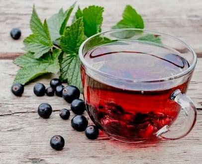
- В стакан положить ингредиенты:
- Не большую веточку чабреца (тимьян)
- 10 г. свежих или с/м ягод черной смородины
- Гвоздики 2 шт
- Имбирь (небольшой очищенный кусочек размером с ч.л. или молотого 1/3 ч.л.)
- Залить горячей кипяченой водой 200мл, дать настояться 5 мин
Салат с креветками, рукколой и помидорами черри
| Ингредиенты на 120 г готового блюда | Продукт | Кол-во | Вес |
|---|---|---|---|
| Помидор (томат) | 0.5 шт. | 49 г | |
| Креветка, сырая | 8.5 шт. | 130.6 г | |
| Соль, столовая йодированная | 1 г | 0.8 г | |
| Перец черный, молотый или горошек | 8 шт. | 0.8 г | |
| Оливковое масло | 1 г | 0.8 мл | |
| Уксус, бальзамический | 1 г | 0.8 г | |
| Руккола | 16.5 г | 16.3 г |

- 1. Разморозить креветки, очистить.
- 2. Разогреть сковороду с оливковым маслом.
- 3. Жарить креветки на большом огне 2–3 минуты (креветки не должны тушиться, они должны подрумяниться).
- 4. Черри разрезать пополам. Рукколу порвать руками и добавить к помидорам.
- 5. Добавить по вкусу соль, перец и бальзамический уксус.
Вареники с картофелем
| Ингредиенты на 250 г готового блюда | Продукт | Кол-во | Вес |
|---|---|---|---|
| Пшеничная мука, белая высшего сорта | 3.5 столовые ложки | 110.3 г | |
| Сметана, 15% жирности | 15.5 г | 15.7 г | |
| Вода | 24.5 г | 24.5 мл | |
| Сода, пищевая | 1 г | 1.2 г | |
| Картофель, сырой | 1 шт. | 122.6 г | |
| Лук, репчатый | 0.5 шт. | 36.8 г | |
| Масло сливочное | 24.5 г | 24.5 г | |
| Перец черный, молотый или горошек | 10 шт. | 1 г | |
| Соль, столовая йодированная | 1 г | 1 г |
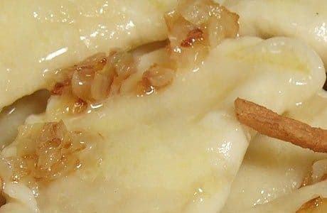
- 1. Картофель очистите, нарежьте крупно и сварите в подсоленной воде. Воду слейте, положите в кастрюлю половину сливочного масла и сделайте пюре.
- 2. Лук мелко нарежьте и обжарьте на растительном масле до красивого румяного цвета.
- 3. Просейте муку в миску и перемешайте ее с солью.
- 4. Соду добавьте в сметану и хорошенько перемешайте.
- 5. Сметану с содой добавьте в муку, перемешайте и, постоянно помешивая и подливая воду, замесите тесто средней густоты.
- 6. Хорошенько вымесите тесто и заверните его минут на 15–20 в пленку или кулек, чтобы тесто чуть-чуть выстоялось и не обветрилось.
- 7. Картофельное пюре поперчите, добавьте в него половину жареного лука и хорошо все перемешайте.
- 8. От готового теста отрежьте примерно четверть, скатайте из этого куска колбаску толщиной около 3 см, которую нарежьте на кусочки толщиной около 1,3 см. Остальное тесто держите в пленке.
- 9. Раскатайте кусочки теста в нетолстые кружочки. Заготовки из теста держите под салфеткой, чтобы они не пересыхали.
- 10. На середину кружочка положите неполную чайную ложечку начинки.
- 11. Края вареника тщательно залепите. При желании можно украсить край вареника «косичкой».
- 12. Вареники опустите в кипящую подсоленную воду, слегка помешайте, чтобы они не прилипли ко дну, и варите 2–3 минуты после всплытия.
- 13. Сваренные вареники вынимайте шумовкой и кладите в миску с оставшимся сливочным маслом. Посыпьте вареники оставшимся жареным луком, а при желании и шкварками из сала. Можно есть вареники и со сметаной.
Кукурузная каша с курагой
| Ингредиенты на 350 г готового блюда | Продукт | Кол-во | Вес |
|---|---|---|---|
| Кукурузная крупа | 2.5 столовые ложки | 46.9 г | |
| Курага (абрикосы сушеные) | 3 шт. | 37.5 г | |
| Подсолнечник, семечки, поджареные без соли | 9.5 г | 9.4 г | |
| Вода | 0.5 стакана 250 мл. | 140.8 мл | |
| Соль, столовая йодированная | 0.5 г | 0.5 г |

- Подготовленную крупу засыпать в кипящую воду, варить периодически помешивая до загустения в течение 15-20 мин., затем добавить горячее порезанную курагу и варить до готовности. Добавить соль. При подаче кашу посыпать семенами подсолнечника.
Каша гречневая (без соли и масла)
| Ингредиенты на 250 г готового блюда | Продукт | Кол-во | Вес |
|---|---|---|---|
| Гречиха, зерно | 2.5 столовые ложки | 63.6 г | |
| Вода | 5.5 столовые ложки | 95.9 мл |

- Гречневую крупу перебрать, тщательно промыть.
- Подготовленную для варки крупу всыпать в кипящую воду, всплывшие пустотелые зерна удалить. Кашу варить до загустения, периодически помешивая. В конце варки плотно закрыть посуду крышкой и оставить на плите с умеренным нагревом для упревания.
Паровые котлеты из индейки с зеленью
| Ингредиенты на 120 г готового блюда | Продукт | Кол-во | Вес |
|---|---|---|---|
| Индейка, белое мясо | 76.6 г | 76.6 г | |
| Лук, репчатый | 13 г | 12.8 г | |
| Петрушка, свежая | 6.5 чайные ложки | 12.8 г | |
| Соль, столовая йодированная | 0.5 г | 0.5 г | |
| Фасоль, стручковая зеленая консервированная | 51.1 г | 51.1 г |
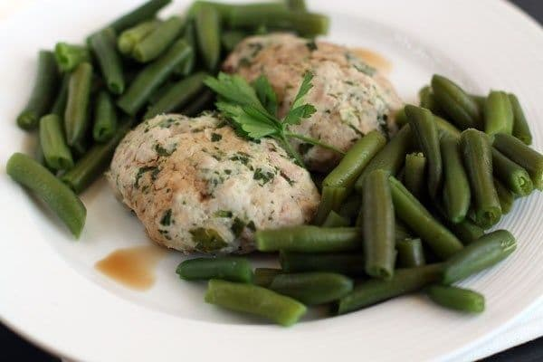
- 1. Мясо грудки индейки измельчаем до состояния однородного фарша в блендере или мясорубке вместе с луковицей. Добавляем много мелко нарезанной зелени петрушки, солим.
- 2. Фарш тщательно перемешиваем и влажными руками делаем котлеты. Укладываем в пароварку так, чтобы между котлетами оставалось немного свободного места.
- 3. Выбираем нужное время приготовления. Для котлет среднего размера хватит 20 минут (по 10 с каждой стороны), чтобы они были готовы.
- 4. Во вторую емкость высыпаем фасоль. Готовить фасоль надо около 10 минут.
- 5. Готовые котлеты должны потерять розовый оттенок, в том числе внутри.
- 6. Подавайте с фасолью. Фасоль будет несоленой, поэтому можно слегка полить ее соевым соусом при подаче.
Борщ
| Ингредиенты на 300 г готового блюда | Продукт | Кол-во | Вес |
|---|---|---|---|
| Вода | 1 стакан 200 мл. | 213.5 мл | |
| Свекла | 9.5 г | 9.6 г | |
| Курица, 1 кат. | 66.7 г | 66.7 г | |
| Картофель, сырой | 0.5 шт. | 53.4 г | |
| Капуста, белокочанная | 26.7 г | 26.7 г | |
| Лук, репчатый | 8 г | 8 г | |
| Морковь | 8 г | 8 г | |
| Чеснок, сырой | 4 г | 3.8 г | |
| Сметана, 15% жирности | 5.5 г | 5.3 г |

- 1. Курицу (можно взять куриное филе) отварить в подсоленной воде до готовности, после чего вытащить и дать подостыть.
- 2. Добавить в кипящий бульон нашинкованную капусту.
- 3. Через 10 минут кинуть нарезанную кубиками свёклу вместе с так же нарезанной картошкой.
- 4. Спустя минут 25 добавляем зажаренные лук+морковь.
- 5. Последний шаг — охлажденное отварное мясо нарезаем, как вам удобно, и кладём в суп.
- 6. Суп готов!) Дайте настояться, добавьте чеснок и сметану.
Тортилья с моцареллой и томатами черри
| Ингредиенты на 100 г готового блюда | Продукт | Кол-во | Вес |
|---|---|---|---|
| Мексиканская лепешка (тортилья) | 0.5 шт. | 37.5 г | |
| Сыр моцарелла, обезжиренный | 31.3 г | 31.3 г | |
| Помидор (томат), черри | 2 шт. | 31.3 г |
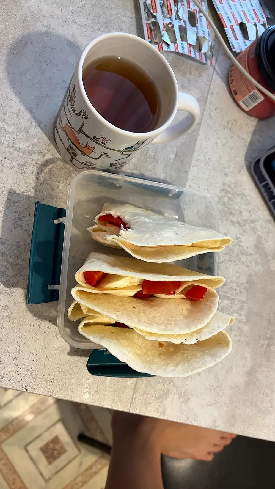
- 1. Помойте помидоры черри и разрежьте их пополам.
- 2. Натрите моцареллу на крупной тёрке (если используется цельный кусок).
- 3. Разогрейте сухую сковороду на среднем огне.
- 4. Выложите тортилью на сковороду, равномерно распределите сверху сыр и добавьте половинки томатов.
- 5. Накройте крышкой и готовьте 5–7 минут до расплавления сыра.
- 6. Сложите тортилью пополам и прогрейте ещё 1–2 минуты. Подавайте горячей.
Облепиховый чай с корицей и медом
| Ингредиенты на 300 г готового блюда | Продукт | Кол-во | Вес |
|---|---|---|---|
| Облепиха | 0.5 стакана 200 мл. | 59.2 г | |
| Мед, пчелиный | 12 г | 11.8 г | |
| Апельсин | 0.5 шт. | 27.6 г | |
| Корица, молотая | 0.5 чайные ложки | 4 г | |
| Вода | 1 стакан 200 мл. | 197.4 мл |
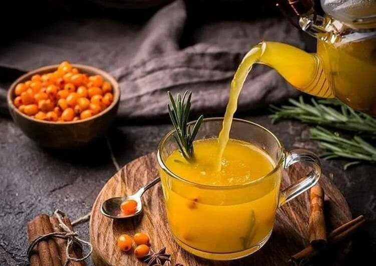
- Залить кипяченой водой и дать постоять от 3-7 мин.
Пельмени
| Ингредиенты на 250 г готового блюда | Продукт | Кол-во | Вес |
|---|---|---|---|
| Пшеничная мука, белая высшего сорта | 4 столовые ложки | 118.4 г | |
| Вода | 3 столовые ложки | 55.2 мл | |
| Яйцо, куриное | 16.5 г | 16.4 г | |
| Говядина, 1 кат. | 47.4 г | 47.4 г | |
| Свинина, мясная | 47.4 г | 47.4 г | |
| Лук, репчатый | 23.5 г | 23.7 г | |
| Чеснок, сырой | 1 г | 0.8 г | |
| Соль, столовая йодированная | 0.5 г | 0.6 г | |
| Перец черный, молотый или горошек | 6.5 шт. | 0.6 г |
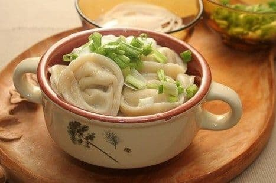
- 1. Приготовление теста: смешать воду с яйцом и солью, получившуюся смесь влить в просеянную муку, замесить тесто и оставить его на 20-30 минут.
- 2. Приготовление фарша: пропустить через мясорубку с мелкой решеткой говядину и свинину, добавить в мясо соль, перец, пропущенный через мясорубку лук и мелко рубленный чеснок, все тщательно перемешать.
- 3. Готовое тесто разделить на 4 части, каждую часть скатать в жгут толщиной 2 см, нарезать на кусочки шириной 1,5 см и на присыпанной мукой поверхности раскатать их в тонкие лепешки. В центр каждой лепешки выложить по 1 ч. л. фарша, сложить кружок с начинкой пополам и узелком соединить концы.
- 4. Варить пельмени в подсоленной воде (2 – 2,5 литра на 30 штук) в течение 8-10 минут. Подавать к столу с маслом, сметаной или уксусом.
Салат из свежих овощей с моцареллой
| Ингредиенты на 100 г готового блюда | Продукт | Кол-во | Вес |
|---|---|---|---|
| Огурец. грунтовый | 0.5 шт. | 41.4 г | |
| Помидор (томат), грунтовый | 51.7 г | 51.7 г | |
| Сыр моцарелла, м.д.ж. 34% в сух. в-ве | 7 г | 6.9 г |
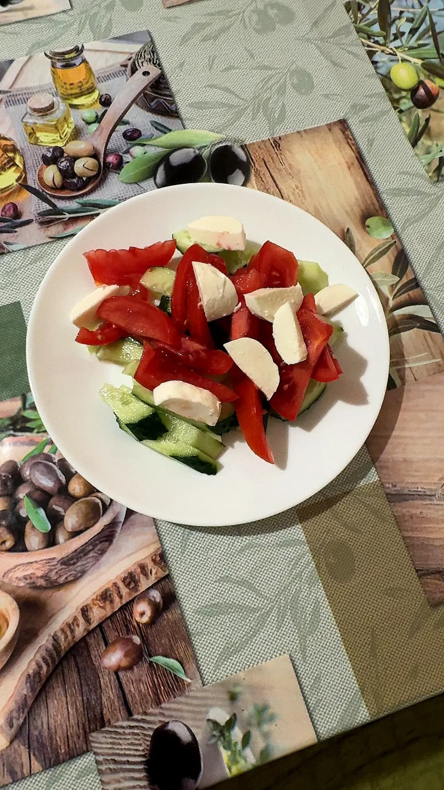
- 1. Огурец и помидоры тщательно вымойте.
- 2. Огурец нарежьте кружочками или полукружочками.
- 3. Помидоры нарежьте крупными дольками.
- 4. Моцареллу нарежьте кубиками или порвите руками на небольшие кусочки.
- 5. Соедините все ингредиенты в салатнике и аккуратно перемешайте перед подачей.
мюсли батончик
| Ингредиенты на 100 г готового блюда | Продукт | Кол-во | Вес |
|---|---|---|---|
| Мюсли | 52.1 г | 52.1 г | |
| Яблоко | 0.5 шт. | 36.5 г | |
| Арахис, жареный | 15.5 г | 15.6 г |
- Мюсли батончик фруктово-орехово-зерновой